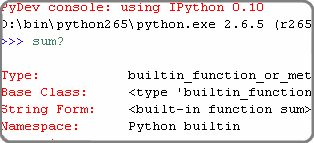
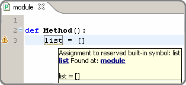

History For PyDev
Release 7.3.0 (2019-08-16)
Debugger improvements (updated to pydevd 1.7.1).
- Fix thread cleanup issue on fork (debugger could crash when subprocess pool was closed).
- Improvements in attach to pid.
- When setting the tracing in one thread attach it to other threads too.
Make it possible to select the black executable (#PyDev-1003).
Update debug console to work with newer versions of Eclipse (patch by Paul Pazderski).
Fix code completion for non-english locale (patch by guyingzhao).
Release 7.2.1 (2019-04-26)
Debugger improvements (updated to pydevd 1.6.1).
- IronPython is debuggable again.
Improved performance of code which checked if some text was a link in the console (which was the cause for some delays when too much text was printed in the console).
Duplicate signature is no longer reported with typing.orverload (#PyDev-970).
Fixed highlighting variables in f-strings (#PyDev-973).
Release 7.2.0 (2019-03-25)
Release 7.1.0 (2019-02-03)
- Accept #region / #endregion (for code folding) at any level.
- Fixed deadlock during race-condition (#PyDev-961).
- Fixed hover links when different pydev_link pointers are used (patch by Daniel).
- Fixed issue where the auto-formatter changed only the \n in a \r\n and the editor presentation became wrong.
- Many debugger improvements (updated to pydevd 1.5.0).
- To use the interactive console in IPython mode, the following environment variable must be set: IPYTHONENABLE=True (previously it was enabled whenever IPython was available).
Release 7.0.3 (2018-11-08)
Mypy
- PyDev can now use Mypy when doing code analysis.
Black Formatter
- PyDev can now use black as the code formatting engine.
Virtual environments
Debugger
- Should be much faster for those on Python 3.6 onwards with cython extensions (using frame evaluation).
The Python 3.7 grammar is now available as an option (even though it's the same as 3.6).
Removed support for using the Python 2.4 grammar.
The 2to3 integration shows a better dialog.
It's possible to autogenerate docstring parameters using the Google Code format (patch by ghbcode).
Release 6.5.0 (2018-09-01)
Release 6.4.4 (2018-07-28)
Debugger
- Fixed issue where a unicode could be used where a string was expected.
- Providing wheel for Python 3.7.
- Fixed issue running Jython.
- No longer showing pydevd internals in the stack.
- Fixed issue with interactive console and debugger integration.
Editor
- Fixed issue parsing and analyzing f-strings.
Release 6.4.3 (2018-07-04)
- Fixed critical error on debugger (could deadlock when creating a new thread).
Release 6.4.2 (2018-07-02)
- Fixed critical error parsing f-strings.
Release 6.4.1 (2018-06-23)
Release 6.4.0 (2018-06-18)
Release 6.3.3 (2018-05-05)
Important PyDev now requires Java 8 and Eclipse 4.6 (Neon) onwards.
- PyDev 5.2.0 is the last release supporting Eclipse 4.5 (Mars).
Debugger
- Command which evaluates selected text in debugger is now properly categorized.
- Warning is no longer shown when a breakpoint is disabled and later removed.
- Fixed issue evaluating conditional breakpoints.
Fixed racing condition when executing scripts which could make some scripts not be executed properly (which could break sending contents to the interactive console).
Autocomplete disabled when renaming symbols (#PyDev-766).
Interactive console exits properly when Eclipse is not properly closed (#PyDev-860).
Code-formatter properly dealing with matrix multiplication operator @= (#PyDev-904).
Fixed issue where the default preferences window had no focus (#PyDev-702).
Translations fixed for the interactive console view (patch by Mat Booth).
Release 6.3.2 (2018-03-17)
Release 6.3.1 (2018-02-26)
Important PyDev now requires Java 8 and Eclipse 4.6 (Neon) onwards.
- PyDev 5.2.0 is the last release supporting Eclipse 4.5 (Mars).
Type inference
- Folders no longer require __init__ to be considered a package.
- Properly recognize cx_Oracle.cp36-win_amd64.pyd as cx_Oracle (#PyDev-885).
Handle empty numpy arrays in debugger.
Fix getting path to activate conda env on Linux.
Fix Debug console freeze when evaluation raises exception with Python 3.5 onwards (#PyDev-877).
Interactive console accepting new args passed by IPython in showtraceback (#PyDev-882).
Improve terminating running processes (and children).
Properly parsing f-strings which contain double {{ or }} (#PyDev-884).
Release 6.2.0 (2017-11-28)
Release 6.1.0 (2017-11-05)
Release 6.0.0 (2017-09-19)
Release 5.9.2 (2017-08-15)
Important PyDev now requires Java 8 and Eclipse 4.6 (Neon) onwards.
- PyDev 5.2.0 is the last release supporting Eclipse 4.5 (Mars).
Debugger
- Some critical fixes related to issues in the latest debugger (#PyDev-837, #PyDev-838, #PyDev-817).
Added support for having isort as the engine for import sorting.
Fixed issue when parsing empty f-string.
Release 5.9.0 (2017-08-10)
Important PyDev now requires Java 8 and Eclipse 4.6 (Neon) onwards.
- PyDev 5.2.0 is the last release supporting Eclipse 4.5 (Mars).
Debugger
- Integrated speedups for Python 3.6 which use the new Python hook which allows the debugger to add breakpoints through bytecode manipulation.
Fixed issue on text search with Lucene when the user had another plugin which also used lucene (#PyDev-826).
From this version onwards, PyDev is built with a proper certificate (previous versions used a self-signed certificate).
Google App Engine templates now working out of the box (patch by Mat Booth).
Optimization in editor highlighting when dealing with huge files.
Some bugfixes in pytest integration.
cv2 added to forced builtins by default for working with OpenCV.
Release 5.8.0 (2017-06-06)
Release 5.7.0 (2017-04-11)
Release 5.6.0 (2017-03-22)
Release 5.5.0 (2017-01-19)
Release 5.4.0 (2016-11-28)
Important PyDev now requires Java 8 and Eclipse 4.6 (Neon) onwards.
- PyDev 5.2.0 is the last release supporting Eclipse 4.5 (Mars).
If you enjoy PyDev, please show your appreciation through its Patreon crowdfunding: https://www.patreon.com/fabioz
Initial support for Python 3.6
- Code analysis for expressions on f-strings.
- Syntax highlighting on f-strings.
- Handling of underscores in numeric literals.
- Parsing (but still not using) variable annotations.
- Parsing asynchronous generators and comprehensions.
Launching
- Improved console description of the launch.
- Support launching files with python -m module.name (instead of python module/name.py). Note: Has to be enabled at Preferences > PyDev > Run.
Debugger
- Shows return values (may be disabled on preferences > PyDev > Debug).
- When the user is waiting for some input, it'll no longer try to evaluate the entered contents.
- Fix for multiprocess debugging when the debugger is started with a programmatic breakpoint (pydevd.settrace).
Unittest integration
- Bugfixes in the pytest integration related to unicode errors.
- unittest subtests are now properly handled in the PyDev unittest runner.
- The currently selected tests are persisted.
Others
- In Linux, when applying a completion which would automatically add an import, if the user focuses the completion pop-up (with Tab) and applies the completion with Shift+Enter, a local import is properly made.
Release 5.3.1 (2016-10-31)
Release 5.3.0 (2016-10-12)
Important PyDev now requires Java 8 and Eclipse 4.6 (Neon) onwards.
- PyDev 5.2.0 is the last release supporting Eclipse 4.5 (Mars).
- See: update sites page for the update site of older versions of PyDev.
- See: the PyDev does not appear after install section on the download page for help on using a Java 8 vm in Eclipse.
Syntax validation for multiple grammars
- Helps to make code which is Python 2 and 3 compatible.
- To customize, go to Project Properties > PyDev - Interpreter/Grammar, and select grammars for "additional syntax validation".
Code completion
The code-completion can now do substring based matches (i.e.: the proposals will be shown if any part of the completion matches the requested name).
It's now the default (to revert to the mode which matches based on "startsWith", change the setting "Preferences > PyDev > Editor > Code Completion > Match substrings on code completion?" to false).
Completion proposals have the part of the completion used to do the match in bold.
Qualifiers of the completion (i.e.: package name) are styled differently (color may be customized in General > Appearance > Colors and Fonts > Basic Qualifier Information Color).
Completions are re-sorted when the name used to request a code completion changes.
Sorting is based on:
- The current name typed (so that matches that are exact or start with the requested token appear first).
- The type of the completion (parameter, local, context insensitive with auto-import, etc).
- Where the completion was found (so, matches from the same project go first, referenced projects second and standard library last).
Ctrl and Shift Behavior when applying code-completion proposal
- Ctrl is always "replace the current name with the completion" for all completions.
- Pressing Ctrl to override the next name in code completion no longer looses the highlight in the editor.
- On code completion with auto-import, for doing local imports, the pop-up must be focused and Shift must be kept pressed while the completion is applied.
PyQt5 support in Interactive Console
- PyQt5 may now be used as a backend in the interactive console so that widgets/plots can be inspected interactively while using the console.
- May be activated with %matplotlib qt5 (when using IPython) or in "Preferences > PyDev > Interactive Console > Enable GUI event loop integration > PyQt5".
Release 5.2.0 (2016-08-17)
Release 5.1.2 (2016-06-23)
Important PyDev now requires Java 8 and Eclipse 4.5.x.
- PyDev 4.5.5 is the last release supporting Java 7 and Eclipse 3.8.
- See: update sites page for the update site of older versions of PyDev.
- See: the PyDev does not appear after install section on the download page for help on using a Java 8 vm in Eclipse.
The pytest integration was redone and should now work properly with the latest pytest.
- Properly showing output of tests in PyUnit view.
- Improved dealing with items filtered through Ctrl+F9.
- Better support for xdist (no longer reporting that the session finished when only a slave finished).
- Reporting skipped items as "skip" and not "ok".
- Properly showing running tests on PyUnit view.
Not using tokenize.open() in Python 3.2 for the execfile custom implementation.
Expand and collapse keybindings changed to use the Numpad entries (so that they don't override the add/subtract used for zooming). #PyDev 695.
The hover in PyDev has a brand new implementation which is now more flexible and easier to extend in plugins (patch by Mark A. Leone).
Release 5.0.0 (2016-05-05)
Important PyDev now requires Java 8 and Eclipse 4.5.x.
- PyDev 4.5.5 is the last release supporting Java 7 and Eclipse 3.8.
- See: update sites page for the update site of older versions of PyDev.
- See: the PyDev does not appear after install section on the download page for help on using a Java 8 vm in Eclipse.
PyUnit view now persists its state across restarts.
Fixed issue in super() code completion.
PyDev.Debugger updated to the latest version.
No longer showing un-needed shell on Linux on startup when showing donation dialog.
Fixed pyedit_wrap_expression to avoid halt of the IDE on Ctrl+1 -> Wrap expression.
Release 4.5.5 (2016-03-22)
Code Completion
- namedtuple now recognized in code-completion.
- Code completion now available for super() (#PyDev-592).
PyTest integration
- Files in tracebacks now clickable in latest pytest.
- Skips not marked as errors in the latest pytest.
Parser:
- async and await should also be valid as names in Python 3 grammar (#PyDev-593).
- Additional Unpacking Generalizations from PEP 448 recognized (#PyDev-667).
- Made clearer in the UI that Python 3 grammar should support Python 3.0 to Python 3.5.
Debugger:
- tests package should no longer pollute name space (Removed tests directories from build: #PyDev-663).
- Multiprocessing working properly under debugger (Celery Cannot Run in Debug Mode: #PyDev-662).
Others:
- Introduce source features/plugins (patch by Andreas Pakulat).
- Default test runner now works with Django >= 1.8 (#PyDev 614, patch by Ville Skyttä).
Release 4.5.4 (2016-01-29)
Debugger
- Fixed critical issue, in which the main process was killed during the debugging when a subprocess exited when "Attach to subprocess automatically while debugging" was enabled (#PyDev 656).
- Fixed issue which broke the action to get the referrers of some object in the debugger (right-click variable in debugger > get referrers).
Release 4.5.3 (2016-01-21)
Release 4.5.1
Debugger
Improved the search to always play safe and update the index so that the matches are always consistent (#PyDev-634).
Fixed issue renaming top-level module on refactoring.
Refactoring has option to rename variable to a standard case style.
Improved the parser that extracted the outline for global tokens to deal with async and consider declarations inside ifs.
Code completion of properties with @property no longer shows arguments parenthesis (#PyDev-453).
Preventing a freeze if some code-analysis takes too much time (#PyDev-636).
Ctrl+1 can be used to wrap/unwrap the contents of brackets (patch by yohell).
Release 4.4.0
- Improved PyDev Package Explorer to give more information when all elements are filtered.
- Code completion improvements: when parameter is typed in the docstring, assigning it to an instance gives proper code-completion results whe accessing the instance.
- Fixed issues dealing with ansi colors in the interactive console.
- When autopep8 is applied as the code formatting engine, the region selected is used to specify the lines for formatting.
- Minor improvements in the debugger.
Release 4.3.0
- Fixed parser for Python 3.x to support async and await as regular names too (PyDev-593).
- The new search dialog now has a 'whole word' option which automatically adds * to the search
- Search backend updated to Lucene 5.2.1.
- When bringing up the search dialog the search text is initially selected.
Release 4.2.0
New search page for Python contents
- Text-searches using a Lucene index allows for fast matches.
- Matches can be flattened and grouped by project, folders and modules.
- Results page allows additional filtering based on module name.

Further improvements on code completion unpacking compound types.
Not adding auto 'import' token in cython files (to accept cimport).
PyDev Mylyn integration no longer depends on a specific PyDev release.
Fixed halting condition when unable to create native file watches.
Vertical indent guide no longer slows down the editor on Linux (PyDev-582).
Release 4.1.0
Code Completion
- Improved unpacking of compound types on more situations (PyDev-573).
Debugger
- PyDev remote debugging no longer blocks running program to completion (PyDev-574).
- When there are too many referrers to some object, results are trimmed.
Python 3 grammar
- Accepting @ as matrix multiplication operator.
- async and await are properly parsed.
- Fixed issue parsing 'list remainder' construct (PyDev-568).
Others
- Fixed issue showing editor title name when more than one dot was present in the filename.
- Support automatic folding elements when opening a file -- must be enabled in PyDev > Editor > Code Folding (patch by Andreas Pakulat).
- Fixed issue on search page.
- Included css to set default editor colors for PyDev for in Eclipse dark theme.
- Tab-stops on comments added and enabled by default (patch by jheiv).
- Fixed StackOverflowError on code-completion (PyDev-570)
Release 4.0.0
Code Completion
- PyDev can now code-complete unpacking compound types (such as list(str), tuple(MyClass), dict(int:str), etc).
- Code-completion now has a maximum amount of time to complete (which may be changed in the code-completion preferences).
Editor
- Bytes and Unicode literals now have different colors (note: by default the Unicode kept the same color used for the old 'Strings' configuration).
- Mark occurrences is now also provided on some statements (such as return, continue, etc).
Others
- It's now possible to bind custom keybindings to help in passing custom commands to the interactive console (see: PyDev > Interactive Console > User Commands)
- The bundled autopep8.py and pep8.py were upgraded.
- Search for references (Ctrl+Shift+G) is faster (all processors available are used for the initial search).
- Search page now has a 'whole word' option.
- Improvements in the PyVmMonitor integration in MacOS and Linux to find the PyVmMonitor executable.
- Fixed PyDev-Mylyn integration in the PyDev Package Explorer to work with the latest Mylyn.
- Fixed issue doing code-completion for elements of a list (lst[0].) in the console. (PyDev-531)
- py.test xfailed tests are no longer marked as 'Failed' in PyUnit view (PyDev-506)
Release 3.9.2
Debugger
- The debug view now has an interactive console (with history) attached to it by default (which may be toggled on/off). (PyDev-507)
- Debugger no longer reopens a file when that file is already opened. (PyDev-456)
- Handled issue when getting referrers for some object gave an error if it was found in a dict where the key is not a string.
- When interactive console starts in debug session, a banner is no longer shown.
- Stepping with #@DontTrace no longer returns through decorator call-site. (PyDev-526)
- The default for tracing template render exceptions on Django is now false.
Interactive Console
- F2 to send contents from editor to console now considers backslash continuations. (PyDev-502)
- Interactive Console interrupt now properly interrupts a sleep call (when possible). (PyDev-500)
- PyDev interactive console now has a user-specified encoding (by default UTF-8). (PyDev-454)
- Scroll the console on stdout / stderr output. (PyDev-504, patch by James Blackburn)
- Moved interactive console initial commands to a separate preferences page.
- Handling interrupted system call EINTR in the pydevconsole.py. (PyDev-534)
- Fixed racing condition where the output of the console could appear as a user input. (PyDev-490, patch by James Blackburn)
Refactoring
- Fixed issue where indentation lost on rename module refactoring. (PyDev-498)
- The rename modules refactoring wizard now provides a way to do a simple resource rename (to rename extensions).
Others
- Converting filename from .pyx to .py doesn't loose indexing on the file anymore. (PyDev-525)
- The Cython parser now properly scopes methods.
- Pasting contents directly in the PyDev package explorer to create a file uses the proper delimiter.
- Fixed deadlock in ImageCache when rendering debug completions from console. (PyDev-527)
- Fixed deadlock on racing condition when rendering PyTextHover. (PyDev-523)
- Tab settings were separated from the editor color settings and may now be persisted in the project/user settings.
- Fixed surround with try..finally/except indentation on Ctrl+1 when some line has a comment which has a different indentation.
Release 3.9.1
- Preferences
- PyDev preferences may now be saved and persisted for each project or in the user settings (not just in the workspace).
- Currently Save actions, Code Formatter, Typing and Imports are supported (more to come in upcoming releases).
- The same pages in the preferences are used to save settings to (multiple) projects or user settings.
- Configuration files are saved in Yaml format and are meant to be saved in version control.
- Editor
- The option to apply auto-formating was changed to apply any save actions in non-workspace files.
- Editor icon improved for dark theme (patch by Fathony Luthfillah).
- When running the pep8 code analysis, the markers shown are no longer 1 character off.
- Django
- Improved Django 1.7 support (patch by David Lehrian).
- Profiling
- Integration with PyVmMonitor: http://pyvmmonitor.com/
- A profiling view was created where the location of PyVmMonitor should be specified.
- Just turning the option on will make all runs from that point on run with the selected profile backend enabled.
- Debugger
- Connecting to subprocesses working in Python 3.4.
- Attach to running process is now supported on Mac OS.
- Others
- Unset VIRTUAL_ENV before running external Python to protect the sys.path (patch by James Blackburn).
- pytest: Expected failure is no longer marked as a failure.
- pytest: The working dir is changed so that conftests are loaded properly (to workaround issue in pytest: https://bitbucket.org/hpk42/pytest/issue/639/conftest-being-loaded-twice-giving).
- Fixed issue where an unused import would not be properly removed if it was not a from import.
- Fixed exception when drawing minimap overview ruler.
Release 3.9.0
Vertical Indent Guide is now available (may be customized in PyDev > Editor > Vertical Indent Guide. PyDev-359).
Minimap
- The horizontal scrollbar is shown by default (again). It's still possible to hide it in the Preferences > PyDev > Editor > Overview Ruler Minimap.
- Fixed critical issue where the minimap could lead to a repaint recursion on some Linux versions (reproduced on Ubuntu 12. LiClipse-120).
The PYTHONPATH is now properly passed to PyLint when using an external executable (PyDev-475).
Fixed issue where breakpoints in other editors (i.e.: CDT) where wrongly being handled by PyDev (patch by Danny Yoo. PyDev-482).
Fixed issue doing code-completion for builtins in Jython (PyDev-457).
Interactive Console
- When doing a code-completion with Ctrl+Space, let tab change the focus instead of doing the tab-enabled completion.
- Output given from the backend could end up being editable (PyDev-465).
- input() was including the prompt in the input string (PyDev-465).
- Debugger console was outputting greeting message when it shouldn't (PyDev-464).
pep8: --exclude can now be used in pep8 parameters (patch by Sebastian Elsner. PyDev-466).
autopep8: end line delimiter is now being kept (patch by Ben Blank. PyDev-461).
Unittest integration: Making sure we don't import the unittest module before executing pytest (PyDev-455).
Unittest integration: Fix to use the proper encoding when passing stdout/stderr to the java side.
Fixed issue when debugging file without extension (when there was no default editor associated to the file name).
Debugger: getpass properly working with additional arguments (PyDev-460).
Release 3.8.0
Debugger
- It's now possible to attach debugger to running process in Windows and Linux (open debug perspective > PyDev > Attach to Process)
pep8 upgraded to 1.5.7
Fixed issue in dialog shown when PyDev editor is opened which could lead to closing the IDE.
Selecting PyQT API version using sip.setapi no longer fails in debug mode (PyDev-452).
Code completion tries to get docstring definition from class before evaluating property (PyDev-412).
Internal error error when parsing file with wrong syntax: java.lang.ClassCastException for invalid dict (PyDev-411).
runfile was restored in pydevconsole (Ctrl+Alt+Enter is working again).
Variables and Expressions views working again when debugging interactive console (PyDev-446).
Pressing Shift to debug with Ctrl+F9 test runner now properly works in Linux (PyDev-444).
Fixed interpreter configuration when the interpreter prints something before actually running interpreterInfo.py (PyDev-448).
Fixed NullPointerException when debugging file without extension.
Release 3.7.1
- Fix in minimap which could deadlock in Linux (patch by Sergey Klyaus).
Release 3.6.0
Important: PyDev requires Eclipse 3.8 or 4.3 onwards and Java 7! For older versions, keep using PyDev 2.x (use LiClipse for a PyDev standalone with all requirements bundled).
Thank you for helping in the current crowdfunding: http://tiny.cc/pydev-2014.
pep8:
- pep8.py was upgraded to the latest version.
Code formatting:
- autopep8.py can now be used to code-format Python files (must be enabled in the code formatter preferences -- use '-a -a' for really aggressive mode).
- Moved auto-save from the code formatter page to the save actions page (and created links to each other).
- Fixed issue where a space was placed before a unary operator on an empty line.
The internal Jython was upgraded to 2.7.beta2 (some manual shrinking was applied to make it smaller).
On a run as unit-test (Ctrl+F9), if Shift is pressed when doing the launch, the unit-test will be launched in debug mode.
Shift+F9 can now be used to launch the current editor in debug mode (so, no more running a module with F9 to run it again later on in debug mode with F11).
Issue where the modules manager would miss the bultin modules was fixed (i.e.: Ctrl+1 to fix 'sys' undefined variable will show the 'import sys' fix).
Fixed corner case where filtering global tokens could miss some entries.
Fixed issue where relative import with more levels would not be found (on dotted imports).
It's now possible to debug UTF-8 files with BOM on Python 3.
Code completion proposals order was tweaked so that locals/globals appear first.
Trailing commas are no longer left when auto-removing unused imports (if that option is enabled in the preferences).
The manual now has instructions on how to use the Find Referrers while debugging.
The PyDev editor supports the new dark theme in Eclipse 4.4 (so, when it's chosen the editor colors are properly updated).
Code analysis: when a package imports itself it's no longer warned as an import not found.
Release 3.5.0
Important: PyDev requires Eclipse 3.8 or 4.3 onwards and Java 7! For older versions, keep using PyDev 2.x (use LiClipse for a PyDev standalone with all requirements bundled).
Adding plead for the current crowdfunding at http://tiny.cc/pydev-2014.
PyDev now has a new logo.
py.test:
- Improved py.test test runner preferences page.
- py.test integration improved to be less intrusive and work with xdist.
- py.test protocol invocation now allows for module/session scoped fixtures to work properly.
Add bookmark and add task actions are shown in the ruler context menu (Ctrl+F10).
Code completion was not properly recognizing variables assigned to self inside an elif statement.
Django 1.7: Model.objects is manually patched inside PyDev to give proper code-completion results.
Debugger: hovering over private ('__' prefixed) variables now shows proper value.
Thread.isAlive() is no longer called to workaround debugger issue on Python 3.4.
Hyperlinking should not happen on spacing characters (I.e.: Ctrl+click on spaces).
Fixed NPE when interpreter is created with JDT and loaded afterwards without it.
Fixed issue where tokens cached information could end up being null after I/O.
Manually creating new run configuration no longer gives an exception (i.e.: configuration without associated project).
Out-of-sync error on PYTHONPATH change (patch by Danny Yoo)
There's an extension point for clients to resolve modules (patch by Danny Yoo).
Ctrl+Shift+G (find references) is now properly categorized.
Rename refactoring now validates files (read only) prior to refactoring (patch by Danny Yoo).
Not checking preferred settings when the PyDev plugin is started, but rather when a PyDev editor is opened.
Setting remote debugger socket to be properly reused.
The PyDev stdout/stderr redirector now properly uses PYTHONIOENCODING.
Release 3.0
From now on, PyDev requires Eclipse 3.8 or 4.3 onwards and Java 7! For older versions, keep using PyDev 2.x.
Interpreter is now kept up to date with changes to the interpreter, so, pip-installing packages will automatically update internal caches without requiring a manual step.
Fixed issue connecting to shell for code-completion (which could halt the IDE).
Interactive Console (patches by Jonah Graham)
- IPython 1.0 is now supported.
- Computational Crystallography Toolbox (CCTBX: http://cctbx.sourceforge.net/) can now be used with PyDev.
- Debug support in interactive console (must be enabled in preferences).
- User Module Deleter (UMD): forcefully reloads user-loaded modules when using runfile on interactive console (must be enabled in preferences).
- GUI event loop integration: more backends are now supported and can be configured in the preferences.
- %gui provides customization for the gui event loop integration (i.e.: %gui wx enables wxPython integration).
- %edit on IPython will open the file in the PyDev editor.
- History of commands is now saved to a persistent file.
- Loading of history is faster.
Interpreter configuration (patches by Andrew Ferrazzutti)
- Interpreter configuration quick auto-config: automatically finds a Python installed and configures it.
- Interpreter configuration advanced auto-config: searches for multiple Python installations in the computer and allows selecting one to configure.
- Source folders (PYTHONPATH) are kept updated on renames and moves in the PyDev package explorer.
Grammar 3.x accepts u'str'.
Fixed project configuration ${PROJECT_DIR_NAME} variable to point to dir name inside Eclipse and not the folder name in filesystem (this could make PyDev miss folders in the project PYTHONPATH).
Debugger:
And as usual, many other bugfixes!
Release 2.8.2
The type inference engine now accepts comments in the format #@type a: str to get the type.
Interpreter configuration properly deals with characters with ampersand.
Interactive console can now work with PySide and wxPython to create widgets without blocking.
Debugger now working properly with Jython 2.1.
Markups in sphinx or epydoc format can now have a different color in docstrings.
Code-completion for the sphinx markup is provided in docstrings.
Fixed issue when resolving module names (which could make PyDev find modules as Lib.math instead of math if the interpreter folder was added to the PYTHONPATH and not only the Lib folder).
When configuring project source folders (PYTHONPATH), it's possible to make use of the PROJECT_DIR_NAME variable.
Patches by Trey Greer:
- PyLint 1.0 is now properly supported.
Patches by Jonah Graham:
- Fixed issue in interactive console interaction with XML-RPC.
- Interactive console history is saved to persistent location.
- It's possible to filter variables in the variables view menu (can be activated with Ctrl+F10 focusing the variables view > PyDev, select/deselect filters).
- Eclipse variables are expanded in the initial interpreter commands for the interactive console.
- An evaluate button (same as Ctrl+Alt+Enter) is now available in the toolbar.
Patches by by Anselm Kruis:
- Fixed issues related to having the interpreter or workspace in locations with non-ascii characters.
Patches by Jeremy Carroll:
- It's now possible to use PEP-8 style imports (default now, can be unconfigured at window > preferencs > pydev > editor > code style > imports).
- It's possible to configure the organize imports to remove unused imports (must be enabled in window > preferencs > pydev > editor > code style > imports).
Patches by Andrew Ferrazzutti:
- Better heuristics to discover file in workspace related to open files when debugging.
- Improvements in the PyDev project configuration and wizard.
- It's possible to mark/unmark folders as source folders with a right-click context menu.
- Auto-Configuration of interpreter streamlined.
Patches by Andre Berg:
- It's possible to have a change action which will keep a variable updated when file is changed (i.e.: __date__ = '2013-01-01' would be updated when file is saved to a new date).
Release 2.8.1
- This release was done just to back-up the change related to Gtk event loop which had some issues, so, the UI event loop will only work with PyQt4 for now.
Release 2.8.0
- Type Inference now works with docstrings (Sphinx or Epydoc). See: Type hinting with docstrings
- Fixed debugger to work on Google App Engine
- Patch by Edward Catmur
- Interactive console supports running with the Qt and Gtk event loops
- Patches by Andrew Ferrazzutti
- Multiple main modules/packages may be selected in the unittest run configuration
- Properly handling unittest errors caused by setUpClass/setUpModule exceptions
- It's possible to select the Working Set configuration in the New PyDev Project wizard
- Patches by Christoph Zwerschke
- It's possible to specify PyLint settings per project by passing --rcfile=.pylintrc (it's now run relative to the project directory)
- PyLint now accepts an executable so that it does not have to rely on the configured interpreter.
- Fixed OutOfMemoryError when large file was found in the workspace.
- Editor startup is now faster due to improvements in Jython scripts.
- Improved the way that the interpreter location is shown on the pydev package explorer.
- PyDev Package Explorer icon no longer missing when top level elements is set to Working Sets
- Other minor bugfixes
Note: PyDev is now signed with a new (self-signed) certificate (see Install Instructions for the new certificate) .
Release 2.7.5
- Icons in the outline are now correct.
- Fixed deadlock found on code analysis.
- Project-related error markers no longer created in the main thread.
- Showing a dialog to select template when a new module is created.
- PyUnit view output font uses the same font as the console
- New option in auto-formatting to auto-format only workspace files.
- Auto-formatting with only deleted lines no longer changes everything.
- PyUnit view orientation menu is now properly shown.
- Fixed interaction with external files on pydev package explorer.
Release 2.7.2 (and 2.7.3)
- Updated icons in PyDev to match better a dark theme.
- Minor: improved colors in outline according to theme.
- Improved minimap.
- Fixed issue copying qualified name when editor is not in the PYTHONPATH.
- Removed ping from PyDev.
- Fixed issue on Ctrl+1 assist to ignore some warning.
- Improved comment/uncomment to deal properly with pep8 formatting.
- Added plead so that PyDev does not become unsupported (see http://igg.me/at/liclipse)
- 2.7.3 fixes major regression regarding scrollbar.
Release 2.7.0 (and 2.7.1)
- Number of spaces before a comment can be configured (default: 2 spaces as pep-8 recommends)
- Minimum number of spaces before start of comment may be configured (default: 1 space as pep-8 recommends)
- Right trim lines now also properly trims comments.
- When the auto-formatter is enabled, if syntax errors are present the code-formatting is not applied (it could end up getting things wrong in this situation).
- Python 3.3 'yield from' syntax now properly supported.
- Fixed issue when unable to get filesystem encoding when configuring interpreter.
- Debugger: 'Enable Condition' checkbox in break properties dialog no longer ignored.
- Fixed ClassCastException during parse in Python file with yield in global scope.
- Fixed StackOverflowError in fast parser (i.e.: parser used to get only the outline of the code).
- PyDev Mylyn integration can now be installed on Eclipse 4.2.
- Fixed NPE when trying to add interpreter and it detected directory which we could not list() in Java.
- Fixed cache issue in code-completion (nature.startRequests() could end up not having nature.endRequests() called).
- Save a bit faster on big files (i.e.: No longer doing invalidateTextPresentation on each save).
Release 2.6.0
- It's now possible to use the interactive console attached to a debug session. (patch from Hussain Bohra)
- To use this feature either right-click a frame in the debug view and choosing PyDev > Debug console or create a new Interactive console as usual (Ctrl+Alt+Enter and choose 'PyDev Debug Console' -- but note that this option will only be enabled when in a debug session with a selected frame in the Debug view.
- Fixed issue where completions from the console did not work properly with '%' because quoting was not being properly done.
- Fixed issue where the execfile() redefinition in the PyDev console did not use the proper globals
- When launching interactive console, PYTHONPATH order is properly kept (patch from James Blackburn).
- Fix pasting into the middle of the console (patch from James Blackburn).
- For paste, only go to the end of the line if the cursor isn't in range (patch from James Blackburn).
- Improved preferences page configuration (links shown to add options).
- Improved test discovery in PyDev PyUnit runner (exclude/include files/tests options added).
- print may be used in dotted names as Jython requires for grammars 2.4 and 2.5.
- In a build, PyDev could end up reading the contents of files unrelated to Python.
- Django project startup compatible with django 1.4.
- Assignments to builtins when in the class-level no longer generate a warning.
- Fixed issue starting new thread in the debugger (fix for paste/waitress).
- Fixed error configuring interpreter if os.path was not present.
- Fixed issue when configuring interpreter which has unicode characters in the PYTHONPATH.
- When searching for external files, also take a look at the configured projects, as it may be that the file should actually be found in an external source folder.
- Fixed issues getting marker on files with a dirty editor and where we could end up getting markers from other files.
- The scripting output console is not shown unless there's actually some output to show.
- A bunch of other minor fixes.
Release 2.5.0
- Project wizard now properly supports Django 1.4.
- pydevd.patch_django_autoreload() now properly patches Django 1.4 for the remote debugger.
- pydevd.patch_django_autoreload() now patches the Django reload to show a console out of Eclipse so that Ctrl+C can be used.
- Created code template to pydevd.patch_django_autoreload().
- The interactive console may be attached to the variables view (patch from Jonah Graham).
- Drag and Drop may be used to drag code from the editor to the interactive console (patch from Jonah Graham).
- When starting an interactive console, a link to configure the preferences is shown in the dialog.
- Multi-lines may be right-trimmed (patch from Haw-Bin Chai) -- option must be enabled in the code-formatting settings.
- Fixed issue where the auto code-formatting would end up formatting strings as regular code when the "format only changed lines" setting was on.
- pydevd.settrace() template now adds the debugger to the PYTHONPATH before actually doing the settrace().
- ${pydevd_file_location} and ${pydevd_dir_location} variables were added to the templates.
- The style of generated docstrings (EpyDoc or Sphinx) may be chosen in the preferences (patch from Paul Collins).
- Some performance improvements were done on the parser.
Aside from the features above, lots of bugs were fixed in this release (including a deadlock in a race condition).
Release 2.4.0
PyDev is now faster and uses less memory (many performance and memory improvements were done)!
The contents of the homepage are now migrated to a wiki at https://wiki.appcelerator.org/display/tis/Python+Development ... (later most of the homepage will become a mirror of the wiki).
Others
- Organize imports: Fixed issue where other statements in a commit line got lost (now such a line is ignored).
- PyDev Package Explorer: closed project no longer remains with old icons.
- Fixed deadlock when setting project as Django.
- Fixed issue in code formatting *args on lambda statement.
- TODO tags: only searched now in a string/comment partition.
- Fixed issue when saving empty document (bad location on code-formatter).
- Fixed issue removing comments from document.
- Applied patch for internal Jython 2.2.1 to fix list.sort (http://bugs.jython.org/issue1835099).
- Fixed resolution of template variable prev_class_or_method and next_class_or_method.
Release 2.3.0
- Pep8.py integrated (must be enabled in PyDev > Editor > Code Analysis > pep8.py).
- Faster PyDev startup (internal Jython upgraded to version 2.2.1 -- and also optimized for PyDev).
- Action to select/deselect scope (Shift+Alt+Up/Down).
- Fix: cache issue where the PYTHONPATH in memory became different from the PYTHONPATH configured for a project.
- Fix: OutOfMemoryError when dealing with PyOpenGL.
- Fix: deadlock (could occur in a race condition when importing a project with an existing Python configuration).
- Fix: code-completion integration issue with IPython 011 (patch from jonahkichwacoders).
- Fix: annotation could remain in editor after removing a marker.
- Fix: BadLocationException on extract local refactoring.
Release 2.2.4
Cython
- Cython is now supported in PyDev (.pyx files may be opened with the PyDev editor).
Globals Token Browser (Ctrl+Shift+T)
- Packages/Modules can now be reached through the globals browser (so, __init__.py files can now be easily gotten through the package they represent)
Handling external files
- External libraries configured in a project appearing in the PyDev Package Explorer
- Show in > PyDev Package Explorer working for files that are under the interpreter or external libraries.
- Show in > PyDev Package Explorer working for files inside .zip archives.
- External files that were opened when Eclipse is closed are properly reopened.
Editor
- New option in the code-formatter to only apply code-formatting on changed lines on save.
- from __future__ import now properly appears as first even if grouping is enabled.
- it's now possible to have a minimap of the code in the overview ruler (enable in preferences > PyDev > Editor > Overview Ruler Minimap).
Unittest runner
- exc_clear() no longer called if it's not available.
- Fixed issue where class tearDown was executed twice.
Debugger
- It's now possible to enable/disable stepping into properties while in the debugger. Menu: Run > Disable step into properties (patch by Hussain Bohra)
- Show in outline view activated in debug perspective (patch by Hussain Bohra)
- Watch expressions can be properly expanded in the watch view (patch by Hussain Bohra)
- Breakpoints in external files are properly shown.
- Remote debugger: starting the remote debugger no longer shows a launch configuration
- Remote debugger: when the server is stopped, the server socket is properly closed
Minors
- Fixed issue in rename (Alt+Shift+R) / find references (Ctrl+Shift+G) on top level module variables.
- Fixed issue where create class/method/field action was not ok because of comment.
- Fixed issue where doing create class/method/field action on file with tabs ended up adding spaces.
Release 2.2.3
- Performance improvements
- Major: Fixed critical issue when dealing with zip files.
- Added option to create method whenever a field would be created in quick fixes (and vice-versa), to properly deal with functional programming styles.
- Fixed issue where PyDev was changing the image from another plugin in the Project Explorer (i.e.: removing error decorations from JSP).
- Fixed issue: if the django models was opened in PyDev, the 'objects' object was not found in the code analysis.
- Test runner no longer leaves exception visible.
- Fixed issue on Py3: Relative imports are only relative if they have a leading dot (otherwise it always goes to the absolute).
- Default is now set to create project with the projects itself as the source folder.
- Handling deletion of .class files.
- Fixed issue where loading class InterpreterInfo in AdditionalSystemInterpreterInfo.getPersistingFolder ended up raising a BundleStatusException in the initialization.
- Fixed some code formatting issues
Release 2.2.2
IPython / Interactive console

- IPython (0.10 or 0.11) is now used as the interactive console backend if PyDev can detect it in the PYTHONPATH.
- While waiting for the output of a command, intermediary results are printed in the console.
- ANSI color codes are supported in the interactive console.
Code Analysis

- Reporting variables that shadow builtins as warnings.
- Fixed issue where __dict__ was not found.
Code completion
- Aliases have a better treatment (i.e.: unittest.assertEqual will show the proper type/parameters).
- Improved support for analyzing function builtins where the return type is known (i.e.: open, str.split, etc).
Debugger
- When doing a remote debug session, if the files cannot be found in the local filesystem, PyDev will ask for files in the remote debugger.
Editor
- Files without extension that have a python shebang (e.g.: #!/usr/bin/python in the first line) are automatically opened with the PyDev editor (in the PyDev Package Explorer).
Django
- When the shell command is used in the django custom commands, PyDev no longer uses 100% cpu while it doesn't complete.
Others
- Fixed issue where the * operator was not properly formatted.
- When the quick outline dialog is deactivated, it's closed.
- Fixed heuristic for finding position for local import.
- Fixed compare editor issue with Eclipse 3.2.
- Fixed integration issue with latest PyLint.
- Fixed deadlock issue on app engine manage window.
- More options added to configure the automatic deletion of .pyc files (delete always, never delete, delete only on .py delete).
Release 2.2.1
Quick-outline
- Parent methods may be shown with a 2nd Ctrl+O.
- The initial node is selected with the current location in the
file.
Extract local refactoring
- Option to replace duplicates.
- Fixed issue where wrong grammar could be used.
Others
- Improved handling of Ctrl+Shift+T so that no keybinding conflict
takes place (now it'll be only active on the PyDev views/editor).
- PyLint markers always removed on a project clean.
- If the standard library source files are not found, more options
are presented.
- If the completion popup is focused and shift is pressed on a
context insensitive completion, a local import is done.
- Fixed issue where a local import wasn't being added to the
correct location.
- Fixed error message in debugger when there was no caught/uncaught
exception set in an empty workspace.
- Performance improvements on hierarchy view.
- Django commands may be deleted on dialog with backspace.
Release 2.2
Eclipse 3.7
- Eclipse 3.7 (Indigo) is now supported.
Break on Exceptions
- It's now possible to break on caught exceptions in the
debugger.
- There's an UI to break on caught or uncaught exceptions (menu:
Run > Manage Python Exception Breakpoints).
Hierarchy view
- UI improved (now only uses SWT -- access through F4 with the
cursor over a class).
PyPy:
- PyDev now supports PyPy (can be configured as a regular Python
interpreter).
Django
- Django configuration in project properties page (improved UI for
configuration of the django manage.py and django settings
module).
- Improved support for debugging Django with autoreload. Details
at: Django remote debugging with
auto-reload.
Code analysis
- Fixed issue where a resolution of a token did not properly
consider a try..except ImportError (always went for the first
match).
- Fixed issue with relative import with wildcards.
- Fixed issue with relative import with alias.
- Fixed issue where binary files would be wrongly parsed (ended up
generating errors in the error log).
Code completion
- Improved sorting of proposals (__*__ come at last)
Others
- Improved ctrl+1 quick fix with local import.
- Fixed issue running with py.test.
- PyDev test runner working properly with unittest2.
- Fixed compatibility issue with eclipse 3.2.
- No longer sorting libraries when adding interpreter/added option
to select all not in workspace.
- Fixed deadlock in the debugger when dealing with multiple
threads.
- Fixed debugger issue (dictionary changing size during thread
creation/removal on python 3.x).
Note: Java 1.4 is no longer supported (at least Java 5 is required
now).
Release 2.1
Noteworthy
Code Analysis
- By default, only the currently opened editor will be analyzed
(much shorter build times).
- Added action to force the analysis on a given folder or file.
- Showing error markers for PyDev elements in the tree.
- New option to remove error markers when the editor is closed
(default).
Editor
- Override method completions (Ctrl+Space after a 'def ') .
- Completions starting with '_' now have lower priority.
- Fixed major issue when replacing markers which could make errors
appear when they shouldn't appear anymore
- Auto-linking on close parens is now optional (and disabled by
default).
Code coverage
- No longer looses the selection on a refresh.
- Fixed issue where coverage was not working properly when running
with multiple processes.
- Added orientation options
PyUnit
- Added feature to relaunch the last launch when file changes (with
option to relaunch only errors).
- setUpClass was not called when running with the pydev test runner
- F12 makes the editor active even if there's a tooltip active in
the PyUnit view.
- The PyUnit tooltip is now properly restoring the focus of the
previous active control.
- Added orientation options
Others
- Upon starting up PyDev, the interpreter information is validated
for changes.
- Improved the django templates code-completion to better deal with
the html/css counterparts.
- When the interpreter is not configured, detect it and take the
proper actions to ask the user to configure it.
- No longer using StyleRange.data as it's not available for older
versions of Eclipse.
- Fixed issue where references to modules could become obsolete in
memory.
- When a source folder is added/removed, the package explorer will
properly update to remove/add errors.
- Fixed issue where code-formatting could be really slow on
unbalanced parenthesis on a big file.
- Fixed error accessing __builtins__.__import__ when
running in the debugger.
- Fixed issue with wrong code-formatting with numbers.
- The assist to create a docstring will remove the pass right after
it (if there's one).
- The path of the file that holds the preferences no longer has the
same number of chars as the path for the interpreter.
- Fixed some TDD actions
- Fixed issue where project references were not being gotten
recursively as they should.
- Fixed dedent issues on else and elif.
- Fixed issue with __init__.py not showing the parent package
name (when set in the preferences to do so).
- sys._getframe shouldn't be needed when running unit-tests in
IronPython.
- Showing interpreter information when a given project is also a
source folder.
Release 2.0
Major (see: video)
TDD actions on Ctrl+1
Improved code coverage support
Noteworthy
PyUnit
- It's possible to pin a test run and restore it later.
- Errors that occur while importing modules are properly shown.
- It's possible to override the test runner configurations for a
given launch.
- The Nose test runner works properly when there's an error in a
fixture.
Editor
- When there's some text selected and ' or " is entered, the
content is converted to a string.
- Handling literals with ui linking.
- Creating ui link in the editor after entering (,[,{ when it is
auto-closed.
- On hover, when there's a name defined in another module, the
statement containing the name is shown.
- It's possible to launch an editor with a file not in the
workspace (a project must be selected in this case)
- If a line starts with __version__ no import is added above
it.
- When doing assign to attributes, if there's a pass in the line
the assign will be added, it's removed.
- When Ctrl+1 is used to add an import on an unresolved variable,
if Ctrl is pressed on apply a local import is done.
Interactive console (options)
- Focus on creation
- When created the selection may be directly sent to the console
The DJANGO_SETTINGS_MODULE environment var is passed when making a
launch.
The outline page now has a filter.
The input() method properly works in Python 3.2 (last "\r" no longer
shown).
LOTS of other adjustments and bug fixes
Release 1.6.5
Syntax highlighting now has options to have {}, [] and () as well
as operators in different colors
Code generation for classes and methods:
Note that this is an initial implementation of the idea,
aimed as those that use a TDD (Test Driven Development)
approach, so, one can create the test first and generate the
classes/methods later on from using shortcuts or quick-fixes
(which is something that those using JDT -- Java Development
Tools -- in Eclipse should be already familiar with). This
feature should be already usable on a number of situations
but it's still far from being 100% complete.
- Alt+Shift+S C can be used to create a class for the
currently selected token
- Alt+Shift+S M can be used to create a method for the
currently selected token
- Ctrl+1 has as a quick fix for creating a class or method
Debugger
- When discovering encoding on Python 3.x, the file is
opened as binary
- Remote debugger (pydevd.settrace()) properly synchronized
- Fixed debugger issue on interpreter shutdown on Python 2.7
Bug fixes:
- Fixed issue when doing code-completion on a line that
started with some token that started with 'import'. e.g.:
import_foo = a
- Fixed import when running unittest with coverage
- Fixed extract local (could extract to wrong location)
- Fixed NPE when requesting print of arguments in the
context-information tooltips
- Fixed AttributeError with pydevconsole on Python 3.x
Release 1.6.4
Improved Unittest integration:
- Created a PyUnit view (with a red/green bar) which can be
used to see the results of tests and relaunching them
- The default test runner now allows parallel execution
(distributing tests by module or individually)
- The nose and py.test test runners are also supported now
Major Bug Fixed: existing interpreters could be corrupted when
adding a new one
Fixed AttributeError on console startup in Python 3.0
Added theming and automatic sash orientation to the PyDev code
coverage view
Patch by frigo7: When creating a new remote debugger target, the
terminated ones are removed
Patch by frigo7: compare editor properly showing the revision
information and fixed broken shortcuts (e.g.: ctrl+z)
Read-only files no longer editable in PyDev actions
Fixed issue of remaining \r on python 3.0 on input()
The PyDev parser is now properly dealing with bom (utf-8)
Assign to local: if method starts with '_', the leading '_' is
not added to the local
Release 1.6.3
Improved editor preferences page when using Aptana themes
Icons updated to work better with dark backgrounds
Handling code-completion for keywords (e.g.: a method definition with
a parameter 'call' will have a 'call=' completion on the caller)
Showing a better tooltip for parameters
No longer marking the Django templates editor as the default editor
for css nor html (it can be restored at window > preferences >
general > editors > file associations)
Globals Browser
Improved message in globals browser to better explan its
features:
- Exact match with a whitespace in the end
- CamelCase matching (so, entering only TC would be
enough to find a class named TestCase)
- Dotted names may be used to filter through the packages
(so, dj.ut.TC would find a TestCase class defined in
the django.utils package)
Fix: When a space is added in the end, an exact match is done
Fix: No longer restoring items that don't exist anymore
Bug Fixes
- Fixed issue on dict and set comprehension code analysis
- Syntax errors on hover in a debug session not shown
- Block preferences page validation before save
- Improved django wizard configuration a bit to cover cases
where the user does not have django installed or tries to add
'django' as the project name
- The example code in the PyDev editor preferences is no longer
editable
- 2to3 only added in the context menu of projects with the PyDev
nature
- If a debug session is terminated, no message saying that the
variable can't be resolved in the hover is shown if the debug
target is still selected
- Fixed path issues in sqlite3 path in django project creation
- Fixed issue where quotes could end up in the execfile when
they should not be there
- Fixed issue where shift right did not work properly because
the indent prefixes were not properly set when the tab
preference changed
Release 1.6.2
PyDev is now also distributed with Aptana Studio 3, so it can be
gotten in a version that doesn't require installing it as a separate
plugin. Get it at:
http://aptana.com/products/studio3/download
Django templates editor (requires Aptana Studio 3)
- Supports HTML files with HTML, CSS and Javascript
- Supports CSS files
- Outline page
- Code-completion for Django templates based on templates
(window > preferences > PyDev > django templates editor >
templates)
- Code-completion for HTML, CSS and Javascript
- Syntax highlighting based on the templates with the 'Django
tags' context
- Colors based on the Aptana themes
Python 2.7 grammar supported
Fixed indexing issue on contents getting getting stale in the cache
Fixed issue where the partitioning became wrong when entering a
multiline string
Colors in the compare editor are now correct when using the Aptana
themes
Extract method refactoring now works with "import" and "from ...
import" inside a method
Source folders now appear before other folders
Fixed False positive on code analysis when using the property
decorator
Release 1.6.1
Debugger
- Critical Fix: issue that prevented the debugger from working
with Python 3 solved
- Improving socket connection handling
Launching
Utilities
- 2to3: Right-clicking a folder or file will show an option
in the PyDev menu to convert from python 2 to python 3 (note
that lib2to3 must available in the python installation).
- Defining execfile in a Python 3 interactive console so that
Ctrl+Alt+Enter works.
- Fixed issue in the code style preferences page (switched value
shown).
- com.ziclix.python.sql added to the forced builtins in a Jython
install by default.
- Improved some icons when on a dark theme (patch from Kenneth
Belitzky)
Release 1.6.0
Debugger
- Code-completion added to the debug console
- Entries in the debug console are evaluated on a line-by-line
basis (previously an empty line was needed)
- Threads started with thread.start_new_thread are now
properly traced in the debugger
- Added method -- pydevd.set_pm_excepthook() -- which clients
may use to debug uncaught exceptions
- Printing exception when unable to connect in the debugger
General
- Interactive console may be created using the eclipse vm (which
may be used for experimenting with Eclipse)
- Apply patch working (Fixed NPE when opening compare editor in
a dialog)
- Added compatibility to Aptana Studio 3 (Beta) -- release from
July 12th
Release 1.5.7
Uniquely identifying editors:
Debugger:
- CRITICAL: Fixed issue which could make the debugger skip
breakpoints
- Properly dealing with varibles that have '<' or '>'
- Debugging file in python 3 with an encoding works
- Double-clicking breakpoint opens file from the workspace
instead of always forcing an external file
- Added '* any file' option for file selection during a debug
where the file is not found
Performance improvements for dealing with really large files:
- Code folding marks won't be shown on really large files for
performance reasons
- Performance improvements in the code-analysis (much faster for
really large files)
- Outline tree is also faster
Interpreter configuration:
- Only restoring the needed interpreter info (so, it's much
faster to add a new interpreter)
- Using an asynchronous progress monitor (which makes it even
faster)
- Interpreter location may not be duplicated (for cases where
the same interpreter is used with a different config,
virtualenv should be used)
- Properly refreshing internal caches (which made a ctrl+2+kill
or a restart of eclipse needed sometimes after configuring the
interpreter)
- socket added to forced builtins
Python 3 grammar:
- Code completion and code-analysis work when dealing with
keyword only parameters
- Properly reporting syntax error instead of throwing a
NumberFormatException on "1.0L"
Editor and forcing tabs:
- Option to toggle forcing tabs added to the editor context menu
- Fixed tabs issue which could change the global setting on
force tabs
Indentation:
- Added rule so that indentation stops at the level of the next
line def or @ (to indent to add a decorator)
- Auto indent strategy may indent based on next line if the
previous is empty
General:
- Django configuration supporting version 1.2 (contribution by
Kenneth Belitzky)
- Fixed encoding problem when pasting encoded text with
indentation
- asthelper.completions no longer created on current directory
when project is removed
- __all__ semantics correct when a tuple is defined (and not
only when a list is defined)
- Fixed issue in extract method (was not creating tuple on
caller function with multiple returns)
- Improved heuristic for assist assign (ctrl+1)
- On search open files (ctrl+2+s), dialog is opened if nothing
is entered and there's no editor selection
- Fixed issue where ctrl+2 would not work on linux
Release 1.5.6
Django integration:
- New Django project can be created through wizards
- Can set an existing project as a Django project (right-click
project > PyDev > set as django project)
- Can remove Django project config (right-click project > django
> remove django project config)
- Custom actions can be passed to the configured manage.py
through ctrl+2+dj django_action -- if no action is
passed, will open dialog to choose from a list of previously
used commands.
- Predefined/custom actions can be used through right-clicking
the project > django > select custom action
- manage.py location and settings module configured
- Django shell (with code-completion, history, etc) available
- Run/Debug as Django available
- See: Django Integration for more
details
Find/Replace:
- The search in open files is no longer added in the
find/replace dialog and now works through Ctrl+2+s
word_to_find (in the PyDev editor) and if no word is
passed, the editor selection is used
Go to definiton:
- Properly works with unsaved files (so, it will work when
searching for a definition on an unsaved file)
- Properly working with eclipse 3.6 (having FileStoreEditorInput
as the editor input)
Editor:
- Automatically closing literals.
- Removing closing pair on backspace on literal
- Improved heuristics for automatically closing (, [ and {
- Removing closing pairs on backspace on (,[ and {
- ctrl+2+sl (sl comes from 'split lines' -- can be used to
add a new line after each comma in the selection
- ctrl+2+is (is comes from 'import string' -- can be used to
transform the selected import into a string with dots
General:
- Code-completion properly working on relative import with an
alias.
- Fixed racing issue that could deadlock PyDev (under really
hard to reproduce circumstances)
- Removing reloading code while debugging until (if) it becomes
more mature in the python side
- Fixed issue where a new project created didn't have the source
folder correctly set
- Text selection in double click no longer has weird behavior
- Local refactoring working on files not in the PYTHONPATH
- Edit properly working on string substitution variables
- Using with statement on python 2.5 no longer makes lines wrong
in the AST
Release 1.5.4
- Actions:
- Go to matching bracket (Ctrl + Shift + P)
- Copy the qualified name of the current context to the clipboard.
- Ctrl + Shift + T keybinding is resolved to show globals in any
context (note: a conflict may occur if JDT is present -- it
can be fixed at the keys preferences if wanted).
- Ctrl + 2 shows a dialog with the list of available options.
- Wrap paragraph is available in the source menu.
- Globals browser will start with the current word if no selection
is available (if possible).
- Templates:
- Scripting engine can be used to add template variables to PyDev.
- New template variables for next, previous class or method, current
module, etc.
- New templates for super and super_raw.
- print is now aware of Python 3.x or 2.x
- Code analysis and code completion:
- Fixed problem when getting builtins with multiple Python
interpreters configured.
- If there's a hasattr(obj, 'attr), 'attr' will be considered in the
code completion and code analysis.
- Fixed issue where analysis was only done once when set to only
analyze open editor.
- Proper namespace leakage semantic in list comprehension.
- Better calltips in IronPython.
- Support for code-completion in Mac OS (interpreter was crashing if
_CF was not imported in the main thread).
- Grammar:
- Fixed issues with 'with' being used as name or keyword in 2.5.
- Fixed error when using nested list comprehension.
- Proper 'as' and 'with' handling in 2.4 and 2.5.
- 'with' statement accepts multiple items in python 3.0.
- Improved hover:
- Showing the actual contents of method or class when hovering.
- Link to the definition of the token being hovered (if class or
method).
- Others:
- Completions for [{( are no longer duplicated when on block mode.
- String substitution can now be configured in the interpreter.
- Fixed synchronization issue that could make PyDev halt.
- Fixed problem when editing with collapsed code.
- Import wasn't found for auto-import location if it import started
with 'import' (worked with 'from')
- Fixed interactive console problem with help() function in Python
3.1
- NullPointerException fix in compare editor.
Release 1.5.3
Fixed bug where an error was being print to the PyDev console on a run.
Release 1.5.2
Profile to have much lower memory requirements (especially on
code-analysis rebuilds)
Profile for parsing to be faster
Compare Editor
- Syntax highlighting integrated
- Editions use the PyDev editor behaviour
- Code completion works
Fixed issue where PyDev could deadlock
No longer reporting import redefinitions and unused variables for the
initial parts of imports such as import os.path
Fixed issue where PyDev was removing __classpath__ from the
pythonpath in jython
Using M1, M2 and M3 for keys instead of hardcoding Ctrl, Shift and Alt
(which should make keybindings right on Mac OS)
Fixed some menus and popups
Properly categorizing PyDev views
Handling binary numbers in the python 2.6 and 3.0 grammar
from __future__ import print_function works on python 2.6
Added drag support from the PyDev package explorer
Properly translating slashes on client/server debug
Other minor fixes
Release 1.5.1
- Improvements in the AST rewriter
- Improvements on the refactoring engine:
- No longer using BRM
- Merged with the latest PEPTIC
- Inline local available
- Extract method bug-fixes
- Extract local on multi-line
- Generating properties using coding style defined in preferences
- Add after current method option added to extract method
- A bunch of other corner-case situations were fixed
- Bug-fixes:
- Minor editor improvements
- Adding default forced builtins on all platforms (e.g.: time, math,
etc) which wouldn't be on sys.builtin_module_names on some
python installations
- Adding 'numpy' and 'Image' to the forced builtins always
- Ctrl+1: Generate docstring minor fixes
- Ctrl+1: Assign to local now follows coding style preferences
properly
- Exponential with uppercase E working on code-formatting
- When a set/get method is found in code-completion for a java class
an NPE is no longer thrown
- Backspace properly treated in block mode
- Setting IRONPYTHONPATH when dealing with IronPython (projects
could not be referenced)
- No longer giving spurious 'statement has no effect' inside of
lambda and decorators
- Fixed new exec in python 3k
- Fixed NPE when breakpoint is related to a resource in a removed
project
- Fixed import problem on regexp that could lead to a recursion.
- No longer giving NPE when debugging with the register view open
- List access be treated as __getitem__() in the list -- patch
from Tassilo Barth
- Fix for invalid auto-self added when typing
Release 1.5.0
PyDev Extensions is now Open Source!
Release: 1.4.8
This was the last version where PyDev and PyDev extensions were not merged.
- Debugger can jump to line
- Reloading module when code changes in the editor if inside debug
session
- Usability improvement on the preferences pages (editor,
code-formatter, comment block and code-style showing examples)
- Pythonpath reported in the main tab was not correct for ironpython
launch configs
- Main module tab in launch configuration was not appearing for jython
- Multiline block comments considering the current indentation (and
working with tabs)
- Hover works correctly when the document is changed
- The interactive console no longer uses the UI thread (so, it doesn't
make eclipse halt anymore on slow requests to the shell)
- The interactive console save history now saves the contents in the
same way they're written
- When creating a python run, the classpath was being set (and
overridden), which should only happen in jython runs
- Fixed issue where a line with only tabs and a close parenthesis would
have additional tabs entered on code-formatting
- A PyDev (Jython) project can coexist with a JDT project (and properly
use its info -- only project references worked previously)
- Many small usability improvements (editors improved)
- Verbosity option added to run as unit-test
- No longer using respectJavaAccessibility=False for jython
- When there are too many items to show in the debugger, handle it
gracefully
Release: 1.4.7
IronPython (2.6 and newer) support
Fixed issue when configuring interpreter on Eclipse 3.3 and 3.2 (was
using API only available in 3.4)
Google App Engine
- Popup menus for google app engine are now working with eclipse 3.2
- Fixed issues when google app engine project has spaces in path
Launching
- Ctrl+F9 can be used to run as unit-test and select which tests
will be run
- F9 will now run the current editor based on the project type
- Changed run icons
- Run configurations can be created for the project
- Run as unit-test can have --filter and --tests as a parameter set in
the run configuration
Shift left can now shift even when there are less chars than the
required indent string
Top-level modules on .egg files are now properly recognized
Auto-config fixed
Fixed problem when .pydevproject was not a parseable xml file (the PyDev
package explorer wouldn't work because of that)
When a new interpreter is created, it's properly selected in the tree
Code-completion better heuristic when analyzing function return that's
called on self.
Code-completion in the interactive console now handles import sections
correctly
Code formatter: Spaces after square and curly braces are no longer
changed when an unary operator is found afterwards
Fixed problem when recognizing encodings (regexp was not correct)
Release: 1.4.6
Google App Engine: customized setup and management of Google App
Engine projects
String substitution variables can be used for pythonpath and launch
config.
The interpreter can be referred from a user-editable name
Submodules shown on import completion (e.g.: from x|<-- request
completion here will show xml, xml.dom, xml.etree, etc)
os.path added to default forced builtins
Showing better errors when code-completion fails
Fixed problem finding definition for java class when the constructor was
referenced.
Fixed recursion error on Python 3.0 grammar
Jython debugger - local variables are properly updated
Multiple forced builtins can be added/removed at once
Python 2.6 grammar: kwarg after unpacking arg list
Python 3.0 grammar: star expr on for
Fixed problem on code-completion when file is not in the workspace
(SystemASTManager cannot be cast to ASTManager)
Not throwing IllegalCharsetNameEx on illegal encoding declaration
anymore (patch by Radim Kubacki)
__future__ imports are always added/reorganized as the 1st import in
the module
Code-completion in Jython recognizes that a method get/setName should be
available as a 'name' property.
Finding 'objects' for django
PyDev Package Explorer
- Added filter for the python nodes
- Showing configuration errors
- Showing the interpreter info
Release: 1.4.5
Better error handling in the grammar
Code Formatter
- Can be applied from context menu (recursively applied for folders)
- Can trim whitespaces from the end of the lines
- Can add new a line to the end of the file
- Can automatically apply code-formatting on save
- Fixed issues with unary operators and exponential
- Fixed issues where parenthesis was lost if no closing parenthesis was
available
Python 3.0
- Parser supporting unicode identifiers
- Star expr recognized
Python 3.1 version acknowledged (and proper grammar used)
PyDev package explorer
- Can show working sets as top-level elements
- Folders without __init__.py are no longer shown as packages
Interactive console
- When waiting for user input, the prompt is not shown
- Console initial commands compatible with Python 3.0
- Timeout for starting console communication while the shell is not
fully initilized
- More info is available if connection fails
Alt+R working (mnemonics set for PyDev contributed menus)
With Ctrl+2, matches will no longer take into acount the case
Code completion: Can get args from docstring when '*' is present.
Better heuristics for automatic insertion of "self" and "import"
Fixed problem configuring external jars and zip files
Launch getting interpreter from project on default config
After a parenthesis, 'n' indentation levels may be applied (patch by
Radim Kubacki)
.pyc files are now marked as derived (note that this will only happen
when they're changed)
Fixed debugger issue with Jython 2.5b3
Jython: completions working for static members access
Hover works on Eclipse 3.2
Release: 1.4.4
Release: 1.4.3
Interactive console The interpreter to be used can be chosen
New modules can be created from templates
Interpreter configuration improved!
- Environment variables can be specified for a given interpreter
- Canceling operation now works correctly
Debugger
- Variables correctly gotten on Jython 2.1 / 2.2
- Using globals as an union of original globals+locals so that
generator expressions can be evaluated
- Breakpoints only opened on double-click (no longer on select)
The project preferences are now applied even if the page to configure
the project is not visible.
Jython 2.5b1 working (problem with sitecustomize)
Wrap paragraph fixed
Set comprehension working on Python 3.0 parsing
Find definition working when a module outside of the known pythonpath is
found
Source folders were not properly found sometimes -- when workspace was
not properly refreshed
Invalid modules could get in the memory
Getting the grammar version for a project could be wrong (and could
loose its indexing at that time)
Multiple external zip files can be added at once to the pythonpath
nonlocal added to keywords
Fixed annoying problem where cursor was jumping when it shouldn't
(outline)
Fixed problem where the breakpoint could be lost (now, playing safe and
matching anything in the file if the context cannot be gotten)
Ctrl + 2 + --reindex can be used to reindex all the opened projects if
the indexing becomes corrupt
Changing nothing on project config and pressing OK no longer reanalyzes
the modules
Release: 1.4.1
Interpreter can be configured on a per-project basis
Jython 2.5b0 properly supported
Find definition working for Jython builtins
Run: can be python/jython even if it doesn't match the interpreter
configured for the project
Fixed problem on find definition if one of the interpreters was not
configured
Fixed halting condition that could occur on code-completion
__file__ available in code-completion
Reorganized preferences (removed editor preferences from the root)
Preferences for showing hover info
Fixed problem when formatting binary operator that was in a new line
When converting spaces to tabs (and vice-versa), the number of spaces
for each tab is asked
Debugger
- When finishing the user code debugging, it doesn't step into the
debugger code anymore
- Fixes for working with Jython
- Fix for Python 3.0 integration (could not resolve variables)
New on: 1.4
- Python 3.0 supported
- Python 2.6 supported
- Find Definition: The context-sensitive code to find a definition
from PyDev Extensions is now available (and used) in the open source
version
- Hover: Showing docstring on hover (currently only available for
files that are not analyzed as builtins)
- Hover: Showing variables on hover while debugging
- Parser: One thread could corrupt the parse of another one
(because of some static variables)
- Parser: Major refactoring which also made the parser faster
- Task tags: The task tags that are created by the user are no
longer removed
- Code formatter unary operators don't have a space added
New on: 1.3.24
- Code-completion: when a relative import was used from
__init__ and the imported module used a token from the
__init__ in a 'full' way, PyDev did not recognize it
- Debugger: Fixed debugger halting problem
- Debugger and Jython: Debugger working with Jython (itertools and
pid not available)
New on: 1.3.23
- Can cancel scanning of files (Radim Kubacki)
- Detection of symlink cycles inside of the pythonpath structure (could
enter in a loop) (Radim Kubacki)
- Removed log message if log is not enabled
- .pyc remover not giving error anymore
- Fixed code-completion bug when importing token with the same name of
module where it's declared (datetime.datetime)
- Assign with tuple not being correctly handled in the type-inference
engine
- Nature no longer initialized by shutdown
- Code-completion works when inner method is declared without self
- __all__: when imported no longer filters out the builtins from
the current module on a wild import
- Fixed problem in update site and Eclipse 3.4 (after installed could
prevent other plugins from being installed -- compatibility problem
on eclipse 3.4 and old versions of PyDev)
New on: 1.3.22
- Debugger: Pythonpath is the same in debug and regular modes
(sys.path[0] is the same directory as the file run)
- Debugger: Choices for paths not found are persisted
- Code-completion: If __all__ is defined with runtime elements
(and not only in a single assign statement), it's ignored for
code-completion purposes
- Code-completion: Works on case where imported module has same
name of builtin
- Editor: Cursor settings no longer overridden
- Interpreter config: "email" automatically added to the "forced
builtins"
- Parser: Correctly recognizing absolute import with 3 or more
levels
- Syntax check: Option analyze only active editor (window >
preferences > PyDev > builders)
- getpass.getpass: No longer halts when run from PyDev (but will
show the password being written)
- Remove error markers: Context menu in folders to remove error
markers created
New on: 1.3.20
- PyDev Package Explorer: Editor-link does not remove focus from
current editor if it's already a match (bug when compare editor was
opened)
- PyDev debugger: Showing set and frozenset contents
- PyDev debugger: Watch working in eclipse 3.4
- PyDev debugger: Breakpoint properties accept new lines and tabs
- PyDev debugger: Workaround for python bug when filenames don't
have absolute paths correctly generated
- PyDev code-completion: Wild import will only show tokens defined
in __all__ (if it's available)
- Interactive console: Fixed problem when more attempts to connect
were needed
- Interactive console: Fixed console integration problem with other
plugins because of interfaces not properly implemented
- Incremental find: Backspace works correctly
- Launch icons: Transparent background (thanks to Radim Kubacki)
- Code Formatter: Exponentials handled correctly
- Launching: Unit-test and code-coverage may launch multiple
folders/files at once
- Code coverage: Number format exception no longer given when
trying to show lines not executed in the editor and all lines are
executed
- Auto-indent: Fixed issue when using tabs which could result in
spaces being added
New on: 1.3.19
- Eclipse 3.2: Interactive console working
- Eclipse 3.4: Hyperlinks working
- Eclipse 3.4: Move / rename working
- raw_input() and input(): functions are now changed when a
program is launched from eclipse to consider a trailing '\r'
- Ctr+/: Changed to toggle comment (instead of only comment) --
patch from Christoph Pickl
- PyDev package explorer: Link working with compare editor
- Auto-indent: Fixed problem when smart indent was turned off
- Debugger: Better inspection of internal variables for dict, list,
tuple, set and frozenset
- Console: When a parenthesis is entered, the text to the end of
the line is no longer deleted
- Code Formatter: can deal with operators (+, -, *, etc)
- Code Formatter: can handle '=' differently inside function calls
/ keyword args
- Problem while navigating PyDev package explorer fixed
- Race condition fixed in PythonNatureStore/PythonNature (thanks to
Radim Kubacki)
- Halt fixed while having multiple editors with the same file (with the
spell service on)
- Pythonpath is no longer lost on closed/imported projects
- Applying a template uses the correct line delimiter
- NPE fixed when creating editor with no interpreter configured
- Hyperlink works in the same way that F3 (saves file before search)
New on: 1.3.18
- Executing external programs: Using Runtime.exec(String[] cmdargs)
instead of a string with the generated command (fixes problems
regarding having spaces in the installation).
- Organize Imports (ctrl+shift+O): Imports can be grouped.
- Cygwin: sys.executable in cygwin was not returning '.exe' in the
end of the executable as it should.
- Additional paths for PYTHONPATH (Patch from Eric Wittmann):
extension point allows plugins to contribute paths to the PYTHONPATH.
- Code-completion: typing '.' won't apply the selected completion,
but will still request a new one with the current contents.
- PyDev Package Explorer: Problem while trying to show active
editor on the PyDev package explorer.
New on: 1.3.17
PyDev Package Explorer: projects that had the project folder in the
pythonpath did not show children items correctly.
Debugger: Disable all works. Patch from: Oldrich Jedlicka
Debugger: Problem when making a step return / step over
Code-completion: Working for attributes found in a superclass
imported with a relative import
Patches from Felix Schwarz:
- Allow to configure an interpreter even if the workspace path name
contains spaces
- Completion server does not work when the eclipse directory contains
spaces
- Fix deletion of resources in PyDev package explorer for Eclipse 3.4
New on: 1.3.16
- Interactive console: help() works
- Interactive console: context information showing in completions
- Interactive console: backspace will also delete the selected text
- Interactive console: ESC does not close the console when in
floating mode anymore
- Code completion: calltips context info correctly made 'bold'
- Code completion: variables starting with '_' do not come in
import *
- Code completion: can be requested for external files (containing
system info)
- Code completion: fixed recursion condition
- Code completion: egg file distributed with dll that has a source
module with the same name only with a __bootstrap__ method now
loads the dll instead of the source module (e.g.: numpy egg)
- Debugger: Step over/Step return can now execute with untraced
frames (much faster)
- Debugger: Problem when handling thread that had no context traced
and was directly removed.
- Launching: F9 will reuse an existing launch instead of creating a
new one every time
- Launching: The default launch with Ctrl+F11 will not ask again
for the launch associated with a file (for new launches -- old
launches should be deleted)
- Project Explorer: fixed integration problems with CDT (and
others)
- Launch: console encoding passed as environment variable (no
longer written to the install location)
- More templates for "surround with" (Ctrl+1)
- Previous/next method could match 'class' and 'def' on invalid
location
- Outline: Assign with multiple targets is recognized
- Bug fix for PyDev package explorer when refreshed element parent was
null
New on: 1.3.15
Files without extension: If a file that does not have an extension
is found in the root of the pythonpath, code-completion and breakpoints
work with it.
Extract method: comma not removed when found after a tuple and
before a keyword argument.
Console Encoding: print u"\xF6" works (console encoding correctly
customized in python -- see
http://sourceforge.net/tracker/index.php?func=detail&aid=1580766&group_id=85796&atid=577329
for details).
Debugger: Context of breakpoint correctly defined when comments are
present in the end of the module.
from __future__ import (xxx, with_statement): works.
Interactive Console View, featuring:
Code Completion
- Context sensitive with shell completions
- Qualifier matches as case insensitive
- Templates
- Repeating the activation changes from templates to default
completions
Console Configurations
- Initial commands for starting the console
- Colors for the console
- Vmargs can be specified for jython
Auto-indent
Auto-edits
Context info on hover
Up / Down Arrows cycles through the history (and uses the current
text to match for the start of the history command)
Page Up: shows dialog with console history (where lines to be
re-executed can be selected)
Esc: clears current line
ctrl+1 works for assign quick-assist
Hyperlinks addedd to tracebacks in the console
Paste added directly to the command line
Cut will only cut from the command line
Copy does not get the prompt chars
Home goes to: first text char / prompt end / line start (and cycles
again)
Cursor automatically moved to command line on key events
Multiple views of the same console can be created
Limitation: Output is not asynchonous (stdout and stderr are only shown
after a new command is sent to the console)
New on: 1.3.14
- Outline view: patch by Laurent Dore: better icons for different
types of fields methods.
- Outline view: patch by Laurent Dore: more filters.
- PyLint: working dir is the directory of the analyzed file.
- Project explorer: fixed bug on integration with Dynamic Web
Project.
- Extract method: fixed bug when trying to refactor structure: a =
b = xxx.
- Generate constructor using fields: working for classes that
derive from builtin classes.
- Override methods: working for classes that derive from builtin
classes.
- Debugger can use psyco for speedups: see
http://pydev.blogspot.com/2008/02/pydev-debugger-and-psyco-speedups.html.
- Debugger: shows parent frame when stepping in a return event.
- Go to previous/next method: (Ctrl+Shift+Up/Down): does not rely
on having a correct parse anymore.
- Auto-formatting: No space after comma if next char is new line.
- Code Completion: Handling completions from attribute access in
classes (accessed from outside of the class).
- Auto-indent: Better handling when indenting to next tab position
within the code.
- Caches: Some places were recreating the cache used during a
completion request instead of using the available one (which could
have a memory impact on some situations).
New on: 1.3.13
- Outline view: working correctly again.
- Keybinding conflict: Alt+shift+T+XXX refactoring keybindings are
now only defined in the PyDev scope.
- Hyperlink: Using new hyperlink mechanism (added at Eclipse 3.3).
New on: 1.3.11
- Jython Integration: Java modules may be referenced from PyDev
projects (working with code-completion, go to definition, etc).
- Jython Debugger: Does not attempt to run untraced threads if
version <= 2.2.1 (this was a Jython bug that's patched for the
current trunk -- note: it prevented the debugger from working
correctly with Jython).
- Project build: Only referenced projects are rebuilt (and not all
projects in the workspace -- e.g.: unreferenced c++ projects).
- Spell checking (depends on JDT): Integrated for comments and
strings within PyDev (eclipse 3.4 should add the support for working
without JDT. Reference:
http://www.eclipse.org/eclipse/platform-text/3.4/plan.php).
- Files without extension: A file without extension can have
code-completion / go to definition (as long as the others around it
do have extensions)
- Debug: Variable substitution is no longer asked twice in debug
mode.
- Custom Filters: User-defined filters can be specified in the
PyDev package explorer.
- Debugger: performance improvements to get the existing frames for
Python 2.4 and Jython 2.1.
- Outline view: Better refresh (doesn't collapse the tree for
simple structure changes).
- Undo limit: The undo limit set in window > preferences > general
> editors > text editors works for PyDev.
- Editor: Tabs as spaces: The newly added 'insert spaces for tabs'
in the general preferences was conflicting with PyDev (those settings
are now ignored)
- Patch by Laurent Dore: Added filter for *.py~ and comments
- Delete *.pyc action: also deletes *.pyo files
- Ctrl+Click: behaves exactly as F3.
- Dedent: No auto-dedent after yield
New on: 1.3.10
- Symlinks supported in the system pythonpath configuration.
- Egg/zip files are now supported.
- The creation of a project in a non-default location is now allowed
within the workspace
- JDT used to get completions from jars (but referencing other java
projects is still not supported).
- Configuration of pythonpath allows multiple selection for removal.
- Configuration of pythonpath allows multiple jars/zips to be added at
once.
- When configuring the pythonpath, the paths are sorted for selection.
- The file extensions that PyDev recognizes for python can now be
customized.
- Patch by Carl Robinson: Code-folding for elements such as
for, try, while, etc.
- Removed the go to next/previous problem annotation (Eclipse 3.3
already provides a default implementation for it).
New on: 1.3.9
- Fixed problem when configuring jython
- Patch from paulj: debbugger working with jython 2.2rc2
- Patch from Oskar Heck: debbugger can change globals
- Added action to delete all .pyc / $py.class files
- Added actions to add/remove the PyDev configuration from a
project (previously, the only way to add a nature was to open a
python file within a project).
- Ctrl+Shift+O: When used with a selection will consider lines
ending with \ (without selection organizes imports)
- Auto-add "import" string will not be added when adding a space in the
case: from xxximport (just after from xxx)
- Templates created with tabs (or spaces indent) are now converted to
the indent being used in the editor
- Hide non-PyDev projects filter working
- Don't show assignments/imports after if __name__ ==
'__main__': in outline
- Code-completion: after a completion is requested, pressing '.'
will apply that completion (and if it has parameters, they'll not be
added).
- Code-completion: when a code-completion is applied with Ctrl
pressed (toggle mode), parameters are not added.
- Assign to local variable/attribute handles constants
correctly.
- psyco changed for Null object for debug (so, no changes are
required to the code if psyco is used while debugging).
- Code-folding annotations won't change places.
- PyDev package explorer will correctly show outline for files if
the project root is set as a source folder.
- PyDev package explorer: folders under the pythonpath have a
package icon.
- Unittest runner: handles multiple selection.
New on: 1.3.8
- Fixed problems related to the PyDev package explorer that appeared
when using java 1.6 (ConcurrentModificationException)
- Other minor bug-fixes
New on: 1.3.7
Support for Eclipse 3.3
Bug Fix: Interpreter modules not correctly set/persisted after
specifying interpreter (so, the builtins and other system libraries
would not be available in completions).
Mylyn integration.
Open With PyDev: does not appear for containers anymore.
Code-completion:
The folowing cases are now considered in code-completion to discover the
type of a variable:
- assert isinstance(obj, Interface) -- default from python
- assert Interface.implementedBy(obj) -- zope
- assert IsImplementation(obj, Interface) -- custom request
- assert IsInterfaceDeclared(obj, Interface) -- custom request
- a = adapt(obj, Interface) -- pyprotocols
- a = obj.GetAdapter(Interface) -- custom request
- a = obj.get_adapter(Interface) -- custom request
- a = GetSingleton(Interface) -- custom request
- a = GetImplementation(Interface) -- custom request
New on: 1.3.6
- Bug Fix: Builtins were not correctly used after specifying
interpreter (so, the builtins would not be available in
completions/code-analysis).
- Patch (from Carl Robinson): PyLint severities can now be
specified.
New on: 1.3.5
Eclipse 3.3 Integration: Does not keep eclipse from a correct
shutdown anymore.
Docstrings and code completion pop-up:
- The docstrings are now wrapped to the size of the pop-up window.
- The initial columns with whitespaces that are common for all the
docstring is now removed.
- The previous size of the pop-up window in completions is now
restored.
Extract method refactoring: was not adding 'if' statement correctly
on a specific case.
Organize imports: (Ctrl+Shift+O): comments are not erased in import
lines when using it anymore.
Interpreter Config: solved a concurrency issue (which could issue an
exception when configuring the interpreter).
Jython integration: can now work with a j9 vm.
Jython integration: those that don't use jython can now use eclipse
without JDT (but it's still required for jython development).
Outline:
- The comments are now set in the correct level (below module, class or
method).
- Comments are sorted by their position even when alphabetic sorting is
in place.
- Comments are added to the outline if they start or end with
'---'.
New on: 1.3.4
- Debugger: Breakpoints working correctly on external files opened
with 'File > Open File...'.
- Debugger: Python 2.5 accepts breakpoints in the module level.
- Debugger: Unicode variables can be shown in the variables view.
- Editor: Coding try..except / try..finally auto-dedents.
- Code Completion: __builtins__ considered a valid completion
- PyDev Package Explorer: Opens files with correct editor (the
PyDev editor was forced).
New on: 1.3.3
- Performance: Optimizations in the code-completion structure.
- Debugger: Performance improvements (it will only actually trace
contexts that have breakpoints -- it was doing that in a module
context before).
- Debugger: Step over correctly stops at the previous context.
- Debugger: Breakpoint labels correct when class/function name
changes.
- Quick-Fix: Move import to global scope would not be correct if
the last line was a multi-line import.
- Outline: Syntax errors will show in the outline.
- Outline: Selection on import nodes is now correct.
- Outline: Link with editor created.
- Outline: Show in outline added to the PyDev perspective.
- Find Previous Problem: action created (Ctrl+Shift+.).
- Extract method refactoring: end line delimiters are gotten
according to the document (it was previously fixed to \n).
- Extension-points: Documentation added for some of the extension
points available.
- Perspective: The PyDev package explorer has been set as the
preferred browser in the PyDev perspective.
New on: 1.3.2
- PyDev Editor: If multiple editors are open for the same file, a
parser is shared among them (which greatly improves the performance
in this case)
- PyDev Editor: Backspace is now indentation-aware (so, it'll try
to dedent to legal levels)
- PyDev Editor: sometimes the 'import' string was added when it
shouldn't
- Fix: Code-completion: case where a package shadows a .pyd is now
controlled (this happened with mxDateTime.pyd)
- Fix: Code-completion: recursion condition was wrongly detected
- Fix: Code-completion: halting condition was found and removed
- Fix: Project Config: if a closed project was referenced, no
project was gathered for any operation (e.g.: code-completion)
- Fix: The filter for showing only PyDev projects is not active by
default anymore
New on: 1.3.1
- Mylyn integration: the PyDev
package explorer now supports
mylyn (packaged as a separate
feature: org.python.pydev.mylyn.feature)
- Code-completion: comment completion is now the same as string
completion
- Debug: Breakpoints can be set in external files
- Debug: Breakpoint annotations now show in external files
- Package Explorer: filter for import nodes created
- Fix: Package Explorer Actions: Open action does not expand
children when opening python file
- Fix: Project Explorer (WTP) integration: does not conflict with
elements from other plugins anymore (such as java projects)
- Fix: halt in new project wizard: when creating a new project from
the PyDev wizard it was halting in some platforms
- Fix: ${string_prompt} in run config: now only evaluated on the
actual run
- Fix: Code-Completion: jython shell was not handling
java.lang.NoClassDefFoundError correctly
New on: 1.3.0
- Code-completion: Deep analysis for discovering arguments in
constructs 'from imports' now can be configured given the number of
chars of the qualifier
- Refactoring for override methods: changed so that it uses the
PyDev code-completion engine for getting the hierarchy and methods
- Fix: Python Nature Restore: begin rule does not match outer scope
rule fixed
- Fix: Package Explorer: if show-in is in a deep structure, it will
show it is the 1st try and not only in the 2nd
- Fix: Package Explorer: some intercepts removed elements
incorrectly, and ended up messing the navigator and search (which has
'null' elements because of that)
New on: 1.2.8
- Refactoring: integration of the PEPTIC refactoring
engine
- Package Explorer: many fixes (special thanks for Don Taylor for
the bug reports)
- Debugger: a number of small optimizations
- Code-completion: works in emacs mode
- Code-completion: added the possibility of auto-completing for all
letter chars and '_' (so, it starts completing once you start
writing)
- Code-completion: code-completion for epydoc inside strings
- Code-completion: assigns after global statement considered added
to the global namespace
- Code-completion: now works when a class is declared in a nested
scope
- Code-completion: if multiple assigns are found to some variable,
the completion will be a merge of them
- Code-completion: functions are analyzed for their return values
for code-completion purposes
- Code-completion: working on multi-line imports
- Code-completion: can discover instance variables not declared in
the class (in the scope where the class was instanced)
- Auto-edit: adds 'self', 'cls' or no parameter based on the
@clasmethod, @staticmethod declaration on previous line
- Auto-edit: doesn't add 'self' if a method is declared in a method
inner scope
- Fix: BRM Refactoring: wrong column was being passed to the BRM
refactoring engine
- Code-folding: added for comments and strings
- Fix: sometimes the 'create docstring' assistant was not
recognizing method definitons
New on: 1.2.7
- Debugger: change value implemented
- PyDev Package Explorer: Default actions (copy, paste, rename,
etc) reimplemented (see
blog
to see what this fixed)
- Block Comments: The remove block comments (Ctrl+5) will now
remove contiguous comments -- if several lines are commented, putting
the cursor in any of those lines and pressing Ctrl+5 will remove all
those comments
- Launch: When creating a new launch, the 'default' option is
chosen, so, if the default interpreter changes later, this won't
affect existing launch configurations
- Code Completion: 'cls' does not appear as 1st parameter on code
completion anymore
- Code Completion: completions for cls on classmethods now works
correctly
- Keybindings: Ctrl+Tab and Ctrl+Shift+Tab keybindings removed from
convert tabs to space-tabs (and vice-versa) -- they are still
available in the source menu
- Fix: the PYTHONPATH passed to PyLint was not containing the
project PYTHONPATH
- Fix: halting condition on code-completion execution
- Fix: 'create docstrings' assist creates @param even if there
is a comment in a function definition
- Fix: block comment for class will recognize better when it is on
a class definition line
New on: 1.2.6
PyDev package explorer (Still BETA, so, use it with care -- the
navigator is still the preferred way of browsing your project)
- Filters for .pyc and .pyo files created
- Working set integration added (just available for Eclipse 3.2.1)
- Some minor bugs fixed
Patch by Olof Wolgast: The 'create docstrings' assistant has
more options (windows > preferences > PyDev > code formatter >
docstrings)
- Option to choose between single and double quotes
- Option to create '@type' too and not only '@param'
- Option to skip creation of the @type tag for parameters starting
with some prefix (if 'Custom' is chosen)
Block comments now have more options (windows > preferences > PyDev
> code formatter > block comments)
- Option to align single-line block comment to the left or right
- Option to put class name above class if applied on a class definition
Fix: Multi-line Templates indent correctly
Fix: When a file from a project that was deleted was still opened
inside PyDev, Eclipse would not start-up correctly
Fix: When a different interpreter is chosen in the run dialog, the
pythonpath is correctly gotten
Fix: when PyDev was started, it would re-save the .pydevproject file
even if no change was done
Fix: When tab width was set to 0 it could halt the editor (now if 0
is set, 4 is assumed)
Grammar Patch by Ueli Kistler, Dennis Hunziker
New on: 1.2.5
- PyDev package explorer was created. Features already implemented:
- Common resource actions (delete, copy, rename, team...)
- Shows the Source folder with a different icon
- Linking mode enabled
- Shows the outline for a python file
- Opening an item in the outline opens the correct place in the
correspondent file
- Debugger bug-fix: Crash when debugging wxPython programs should not
happen anymore
- When opening a file, the encoding is considered (and not only when
saving it)
- Patches from Gergely Kis:
- Option for having a 'default interpreter' in the combo for
selecting which interpreter to use for a run
- Saving the things related to the PyDev project in a .pydevproject
file to be commited
- Patch from Gregory Golberg:
- Ctrl+Shift+D when a variable is selected in debug mode shows
the variable value
New on: 1.2.4
- Completions for parameters based on the tokens that were defined for
it in a given context
- Removed the default PyLint options, because its command-line
interface changed (that was crashing PyLint in newer versions)
- Changed the grammar so that 'yield' is correctly parsed as an
expression
- Giving better error message when external file is opened without any
interpreter selected
- Icons for the builtins gotten on large libraries (such as wx -- it
was optimized not to do that before)
- Adding jars relative to the project now works correctly
- The debugger is now able to get the variables in a context when
handling negative payloads (patch by Javier Sanz)
New on: 1.2.3
When the user specifies an invalid interpreter, a better error report
is given (previously it was only shown in the error log)
When threads die, the debugger is notified about it (so that they are
removed from the stack)
Writing the preferences to the disk is now buffered
Fixed problem when debugging in jython with the statement "from xxx
import *"
Fixed one issue with the indentation engine
Commenting a line does not remove a blank line in the end anymore
Added debug mode for unit-test
Added the possibility of setting the -Dpython.cachedir for
running the jython shell (errors can arise in unix-based machines if
jython is not able to write its cache)
Contributions
- Darrell Maples:
- Unit-test refactoring
- Run as jython unit-test
- Filter test methods to run
- Joel Hedlund
- Added a support to ease adding options to Ctrl+1 in the
scripting engine
- Added a ctrl+1 for the case:
- def m1(self, arg=None):
arg |<-- Ctrl+1 shows option to do:
def m1(self, arg=None):
if arg is None:
arg = []
Support for python 2.5
- Added the new relative import
- Added the new if expression
- Added the unified try..except..finally statement
- Added the with x:... statement
- Indenting after the new with statement
- Recognizing 'with' as a keyword in syntax highlighting
New on: 1.2.2
Code Completion
- Calltips added to PyDev
- The parameters are now linked when a completion is selected (so, tab
iterates through them and enter goes to the end of the definition)
- Parameters gotten from docstring analysis for builtins that don't
work with 'inspect.getargspec'
- Getting completions for the pattern a,b,c=range(3) inside a class
- Code completion for nested modules had a bug fixed
- Added the 'toggle completion type' when ctrl is pressed in the
code-completion for context-sensitive data
- Code-completion works correctly after instantiating a class:
MyClass(). <-- will bring correct completions
- Code-completion can now get the arguments passed when instatiating a
class (getting the args from __init__)
- self is added as a parameter in the completion analyzing whether
we're in a bounded or unbounded call
- Pressing Ctrl+Space a second time changes default / template
completions
Outline View
- Added option for hiding comments and imports
- Persisting configuration
- Added option for expanding all
Others
- Possibility of setting pyunit verbosity level (by Darrell Maples)
- Errors getting the tests to run are no longer suppressed
- Ctrl+2+kill also clears the internal cache for compiled modules
(especially useful for those that create compiled dependencies).
- Last opened path remembered when configuring the pythonpath (dialog)
New on: 1.2.1
- The user is asked for which paths should be added to the system
pythonpath
- Go to previous method now works with decorators
- Stack-trace link now opens in correct line for external files
- Variables now show in the variables view while debugging
- If an invalid interpreter is selected to run a file (old interpreter
or wrong project type), a warning is given to the user
- Ctrl+w is removed as the default for select word (the action is still
there, but its keybinding is removed, so, users have to configure
themselves which keybinding they want for it)
- Assign to local or field variable now enters in linked mode
- Added dependency to Eclipse 3.2 features, as version 1.2.0 of PyDev
and newer are only Eclipse 3.2 compatible.
New on: 1.2.0
- Eclipse 3.2 supported (and 3.1 support is now discontinued)
- Lot's of optimizations to make PyDev faster
- Ctrl+Click now works with the find definition engine
- Comments that start with #--- are shown in the outline
- Attributes are shown in the outline
- Parse errors are now shown (again) in the editor
- Many other bugs fixed
New on: 1.1.0
- Startup is now faster for the plugin: actions, scripts, etc. are now
all initialized in a separate thread
- Indentation engine does not degrade as document grows
- Multiple-string does not mess up highlighting anymore
- code completion issue with {} solved
- Ctrl+W: now expands the selection to cover the whole word where the
cursor is
- Assign to attributes (provided by Joel Hedlund) was expanded so that
Ctrl+1 on method line provides it as a valid proposal
- A Typing preferences page was created so that the main page now fits
in lower resolutions
NOTE: this is the last version with support for Eclipse 3.1
New on: 1.0.8
- The Parser character stream was redone to be more efficient
(especially when dealing with big files)
- The thread that does analysis had its priority lowered
- When running a file, the pythonpath set now let's the project
pythonpath before the system pythonpath
- The way modules are resolved for loading when running unit-tests has
changed
- Indentation further improved
- Debugger changes for working with jython
- Ctrl+2+w: wraps the current paragraph to the number of lines
specified in the preferences. This was provided by Don Tailor
(revisions are also available in
http://pilger.googlepages.com/pydevstuff)
- Lot's of bug-fixes and optimizations
New on: 1.0.7
- This is a single-bugfix release. It fixes an error that could occur
when adding a newline in a document that had a docstring with an
empty newline in the global level.
New on: 1.0.6
- Assign variables to attributes (Ctrl+2+a): Contributed by Joel
Hedlund (this is the first contribution using the new jython
scripting engine).
- 3 minor 'quirks' were fixed in the indentation engine
- The debugger had some changes (so, if you had halts with it, please
try it again).
- Allow changing the keybinding for activating the Find next problem
(Ctrl+.)
- The debugger step-return had its behaviour changed.
- Additional scripts location added to pythonpath in the jython
scripting engine
- Transversal of nested references improved
- Fixed problems with compiled modules when they had 'nested' module
structures (e.g.: wx.glcanvas)
New on: 1.0.5
- Another batch of things to improve indentation:
- Indent does not try to make auto-indentation when pasting
- When smart-indent is not selected, it will still add an
indentation level after ':'
- It will keep the indent of the previous line on new-lines if the
current line is empty
- Other little things
- Added a place to specify vm arguments (for jython or python) --
thanks to Rudi de Andrade for this patch
- Added a way to kill the underlying python/jython shells
(Ctrl+2+kill)
New on: 1.0.4
Added jython scripting
Added an 'easy' way to bind actions after Ctrl+2 (to make scripting
easier)
Added a way to list things binded with Ctrl+2 (To see: Ctrl+2+help)
Added a 'go to next problem' with jython scripting capabilities, as a
first example on how to script PyDev with Jython (Ctrl+.)
A brand new indentation engine is available:
- Does not try to make different indentations inside multilines
- Does not try to add spaces to make smart-indent when in only tabs
mode
- Indents correctly after opening some bracket or after closing some
bracket
- Indents to 'expected level' when hitting tab
Fixed bug: syntax error described instead of throwing an error
Profiled PyDev (not that much, but still, I hope you'll be able to
'feel' it)
Fixed bug: the pythonpath was not added when additional environment
variables where specified
And as always, other bugs have been fixed
New on: 1.0.3
- Fixed error while organizing imports with the construct from xxx
import (a,b\n c)
- Auto-dedent for 'else:' and 'elif' constructs
- Added color customization for the function name and class name
- Fixed debugger error: it could halt when getting some variable
representation if the variable translated in a string that was huge
- Fixed error while debugging with conditional breakpoint (only
evaluated the first time) -- Thanks to Achim Nierbeck for this fix
- Show in view: Resource Navigator (Ctrl+Alt+W) now is always active on
the PyDev view
- Fixed leak on template images
New on: 1.0.2
- Jython debugging now working.
- Code coverage does not report docstrings as not being executed.
- Freeze when making a 'step-in' fixed in the debugger.
- Grammar generated with javacc version 4.0
New on: 1.0.1
- Fix for an out-of-memory error when restoring the interpreter
(single thing in this release)
New on: 1.0
- High-speed Debugger (on par with the best debuggers available)
- Debugger now gets the variables 'on-demand'
- The variables returned for jython are much more complete
- Wizard to create new project has option for creating a default 'src'
folder (and add it to the pythonpath).
- The create new python module and new python package have been
reviewed (you can still use the regular ones, but the new ones are
really reccommended -- also it will help in making sure you have your
pythonpath correctly configured!).
- Create new source folder option added.
- PyLint can now give the output to the console (configurable).
- PyLint 0.9.0 tested
- PyLint errors now show in the hover
- The PyDev perspective was changed (so, please, close the current and
ro-open it)
- Templates were added for the keywords
- Keybindings were added to run the current editor as python (F9) or as
jython (Ctrl+F9). Those are customizable in the 'keys' preferences
- And many other bug-fixes as usual
New on: 0.9.8.7
- The debugger tracing was turned off (this was a bug in 0.9.8.6
and could make debugging much slower)
- Fixed jython shell (and extended it to get better information on
code-completion).
- Changed the interpreter configuration so that it is backwards-compatible from now on...
(but the current interpreters will be lost and will need to be configured)
- Breakpoints can have conditionals (this was contributed by Achim
Nierbeck, and was actually provided in release 0.9.8.6, but I forgot
to put it in the release notes)
- Some other bugfixes are also in this build.
New on: 0.9.8.6
- Added a new 'PyDev project' wizard (Mikko Ohtamaa contribution)--
it is named as PyDev Project instead of Python project because it
creates Python and Jython projects.
- Added a new 'PyDev module' wizard (Mikko Ohtamaa contribution) --
NOTE: it still needs some work.
- Changes in the shell spawning were done, and no hangs should appear
when trying to do code-completion anymore (if it still hapens,
please report it as a bug -- NOTE: a little delay on the first time
code-completion is executed is expected, as this is the time the
shell is started).
New on: 0.9.8.5
- Removed the dependency on packages 'sun.xxxx.Base64', so that other
VMs can be targetted
- Some code-completion problems in the 'resolution order' regarding
tokens in __init__ were solved
- Added option so that the user can choose whether to automatically add
'self' or not in method definitions
New on: 0.9.8.4
- The license was changed to EPL. It can be found at:
http://www.opensource.org/licenses/eclipse-1.0.php
- Code-completion information is now saved in deltas instead of "saving
only at shutdown" (being so, it does not loose information if it does
not have a regular shut-down).
- Added option for not using the smart-indent after opening brackets
New on: 0.9.8.3
- Debugger was improved to be faster (more info about it at the PyDev
blog).
- Add watch added to the editor popup menu
- Added syntax highlighting to the 'self' token
- Code folding added for 'glued' imports
- Fixed some outline problems
- Debugger does not try to get breakpoints on closed projects anymore
- Some refreshing issues regarding the outline and colors when reusing
the editor were fixed
- Code completion for relative imports has changed a lot (there were
some pretty hard-to-find bugs in this area...)
- Some move imports problems fixed
- The auto-add '(self):' now works with tabs too
New on: 0.9.8.2
- Content assistants reviewed (and better
documented on the homepage -- I really reccomend checking
it)
- Timeout parsing options added (this is available in the builder
preferences page)
- Auto-dedent added
- .pyc is removed when the corresponding .py file is removed.
- Debugger has been changed so that it becomes faster (still not as
fast as I would like, but still... faster)
- Some escaped quotes problems fixed when formatting code
- Navigation with Ctrl+Shift+ (up or down) has been slightly improved,
so that it goes to the start or the end of the file when no other
class or method definition is found
- Other bug-fixes (as ususal)
New on 0.9.8.1
- Java 1.4 support reintroduced.
- Styles added for syntax highlighting (bold and italic), contributed
by Gerhard Kalab.
- zombie process after exiting eclipse should not happen anymore
- paths with '.' are accepted for the pythonpath (unless they start
with a '.', because it may not accept relative paths).
- relative imports are added to code-completion
- local imports are taken into consideration when doing code completion
- debugger has 'change support', so, changed variables in a scope
appear red
New on 0.9.8
- jython integration supports spaces for jython.jar and java install
- jython code-completion support for new style objects (jython 2.2a1)
has been enhanced.
- many templates were added
- the grammar evolved a lot, so, now you actually have decorators in
the grammar, list comprehension on method calls and tuples and the
new from xxx import (a,b,c) syntax.
- pylint supports spaces
- pylint is no longer distributed with PyDev (it must be installed in
the site-packages and its location must be specified in the
preferences)
- some problems regarding 'zombie processes' after eclipse exit with
the shells used for code-completion should be fixed
New on 0.9.7.99
- PyDev has its first shot at Jython. you should be able to use
many things already, meaning: all the common editor features and code
completion.
- The debugger is working.
- Code completion has been improved for supporting wild imports and
relative imports better (sometimes it had some problems).
- There are hovers for the text and annotations (when you pass the
mouse through an error it will show its description).
- Block comment (Ctrl+4) now uses the size defined for the print
margin.
- New block-comment style added (Ctrl+Shift+4).
- New icons were created.
- Many other bug-fixes as usual.
New on 0.9.7
- This release contains some high-priority bug fixes...
New on 0.9.6
- Eclipse 3.1 is supported
- Only java 5 is supported
- PyDev builder ignores team private members
- Print Margin indicator now displays correctly
- Help docs are shown again
- Text editor configurations are inherited from the text editor (and
just extended in the preferences)
- Auto-close parentesis and 'eat colon' (courtesy from Karol Pietrzak)
- Some more bugs...
New on 0.9.5
- Last release with java 1.4 support
- File encodings now follow the python convention
- Overview ruler now works
- Editor is synchronized when working in multiple windows with the same
file
- Code folding improved
- Syntax highlighting is not confused by escaped quote + triple quote
anymore
- Insertion of parentheses now replaces selected text
New on 0.9.4
- Nice PYTHONPATH configuration, and it is used for running your files,
PyLint, code completion...
- Integrated Scott Schleiser patches for the debugger (you won't see
any 'implement me' anymore!).
- Integrated Heikki Toivonen patch for PyLint using
the project pythonpath.
- Integrated Heikki Toivonen patch for indentation after '(', '[' and
'{' (if the line ends with a comma).
- Some StackOverflow errors were removed from code completion.
- Keybindings added for Refactoring (powered by
bycicle repair man) - check the FAQ.
New on 0.9.3
- Code completion is finished until 1.0 is released, so, if you`re
missing something, please report it!
- New Content Assistants added. Not very well
documented right now, but I'll do it later...
- Removed dependecy on java.internals packages, so, this should solve
the problems some people had when updating to 0.9.2
- Latest PyLint integrated.
New on 0.9.2
- Scott Schleiser inside the editor... now on apply, it applies new
settings, without restarting the editor.
- Scott Schleiser inside the debugger... most 'implement me' and
'volunteers needed' were fixed.
- New Content Assistants added.
- Docstrings in national encodings should work.
- from foo import bar, xxx, yyy... should work.
- Custom colors for decorators and numbers.
- Matching brackets highlighted.
- Bugs: code-formatting and others...
New on 0.9.1:
- Ctrl+Shift+O: Organizes imports or sorts selection alphabetically
- Ctrl+Shift+F: Autoformat your code (preferences can be set)
- Namespace and PYTHONPATH now are the same for debug and run
- Code Completion has been improved:
Parameters are gotten as completions, builtins like -- [], {} and ''
-- return completions. Relative imports should be working (along with
some other bug-fixes).
- PyLint 0.6.3 integrated.
New on 0.9.0:
- Code Completion bug for python 2.4 fixed.
- Code Completion has other bug-fixes solved,
mostly due to imports that it was unable to find.
- PyLint 0.6 integrated.
- New Python 2.4 syntax supported
- PyDev builders can be disabled (NOTE: some features might not work
when this is done - see the FAQ).
New on 0.8.5:
- Better Code Completion (Ctrl+Space)
- Watch in debugger.
- Background and current line color chooser.
New on 0.7.1 (2004-10-20)
0.1 (2003-08-05)
First PyDev released!
|


![]( "Patreon")